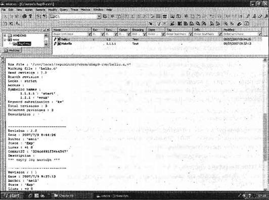
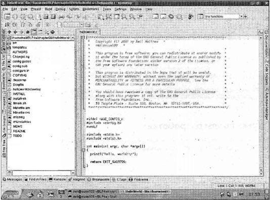
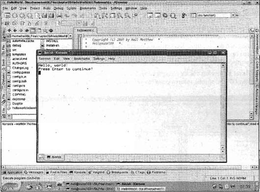

|
|||||||||||||||||||||||||||||||||||||||||||||||||||||||||||||||||||||||||||||||||||
|
|
Глава 9Средства разработки В этой главе рассматриваются средства разработки программ, применяемые в ОС Linux, некоторые из них доступны и в ОС UNIX. В дополнение к обязательным составляющим, таким как компиляторы и отладчики, Linux предлагает ряд средств, каждое из которых предназначено для одного вида работы и позволяет разработчику комбинировать эти средства новыми оригинальными способами. Такой подход — часть идеологии UNIX, которую унаследовала ОС Linux. В данной главе рассматривается несколько наиболее важных средств разработки и показан ряд примеров их использования для решения проблем. К этим средствам относятся следующие: □ команда makeи make-файлы; □ управление исходным программным кодом с помощью RCS и CVS; □ написание интерактивного руководства; □ распространение программного обеспечения с помощью patchи tar; □ среды разработки. Проблемы применения многочисленных исходных файловПри написании маленьких программ многие программисты после корректировки просто перестраивают свое приложение, компилируя заново все файлы. Но в случае больших программ такой простой подход порождает проблемы. Время цикла "редактирование — компиляция — тестирование" быстро растет. Даже самому терпеливому программисту хотелось бы избежать перекомпиляции всех файлов при изменении лишь одного из них. Гораздо более серьезная проблема может возникнуть при создании многочисленных заголовочных файлов и включении их в разные исходные файлы. Предположим, что у вас есть заголовочные файлы a.h, b.h и c.h и исходные файлы на языке С main.c, 2.с и 3.c (мы надеемся, что в реальных проектах вы выберете более удачные имена, чем приведенные здесь). Вы можете столкнуться со следующей ситуацией. /* main.c */ #include "a.h" ... /* 2.с */ #include "a.h" #include "b.h" ... /* 3.c */ #include "b.h" #include "c.h" ... Если программист изменяет файл c.h, файлы main.c и 2.с не нужно перекомпилировать, поскольку они не зависят от этого заголовочного файла. Файл 3.с зависит от c.h и, следовательно, должен быть откомпилирован заново, если изменился c.h. Но если был изменен файл b.h, и программист забыл откомпилировать заново файл 2.с, результирующая программа может перестать работать корректно. Утилита makeможет решить обе эти проблемы, обеспечивая в случае необходимости перекомпиляцию всех файлов, затронутых изменениями. Примечание Команда make и make-файлыНесмотря на то, что у команды makeмного внутренних сведений и знаний, она не может самостоятельно решить, как скомпоновать ваше приложение. Вы должны предоставить файл, который сообщит ей, как устроено приложение. Этот файл называется make-файлом или файлом сборки. Make-файл чаще всего расположен в том же каталоге, что и другие исходные файлы проекта. В любой момент времени на вашем компьютере может быть множество make-файлов. Действительно, если у вас большой проект, вы можете управлять им, используя отдельные make-файлы для разных частей проекта. Сочетание команды makeи make-файла — мощное средство управления проектами. Оно часто применяется не только для управления компиляцией исходного программного кода, но и для подготовки интерактивного справочного руководства или установки приложения в нужный каталог. Синтаксис make-файловMake-файл состоит из набора зависимостей и правил. У зависимости есть цель или задание (выходной файл, который нужно создать) и набор исходных файлов, от которых она зависит. Правила или инструкции описывают, как создать выходной файл из зависимых файлов. Обычно цель — это единый исполняемый файл. Make-файл читается командой make, определяющей выходной файл или файлы, которые должны быть сформированы, и затем сравнивающей даты и время исходных файлов, чтобы решить, какие инструкции нужно вызвать для формирования выходного файла. Часто следует выполнить другие промежуточные задания, прежде чем может быть сформирована заключительная цель. Команда makeиспользует make-файл для определения порядка, в котором должны выполняться задания, и корректной последовательности запуска правил. Опции и параметры makeУ программы makeесть несколько опций. Наиболее часто применяются следующие: □ -k, сообщающая makeо необходимости продолжать выполнение, если обнаружена ошибка, а не останавливаться при появлении первой проблемы. Эту опцию можно использовать, например, для выявления за один проход всех исходных файлов, которые не могут быть откомпилированы; □ -n, сообщающая makeо необходимости вывода перечня требуемых действий без реального их выполнения; □ -f <файл>, позволяющая сообщить makeо том, какой файл применять как make-файл. Если вы не используете эту опцию, стандартная версия программы makeищет в текущем каталоге первый файл, названный makefile. Если его нет, программа ищет файл, названный Makefile. Но если вы применяете GNU Make, что вероятно в ОС Linux, эта версия программы make сначала ищет файл GNUmakefile до поиска файла makefile и последующего поиска Makefile. В соответствии с соглашением программисты Linux применяют имя Makefile, которое позволяет поместить файл сборки первым в списке файлов каталога, заполненного именами файлов, состоящими из строчных букв. Мы полагаем, что вы не будете использовать имя GNUmakefile, поскольку оно специфично для. реализации GNU программы make. Для того чтобы заставить команду makeвыполнить конкретное задание, как правило, собрать исполняемый файл, вы можете передать makeимя задания или цели как параметр. Если этого не сделать, программа makeпопытается выполнить первое задание, указанное в make-файле. Многие программисты указывают в своих make-файлах в качестве первой цели или задания allи затем перечисляют остальные задания, как зависимости для all. Это соглашение делает понятным выбор задания по умолчанию, если не задана конкретная цель. Мы полагаем, что вы будете придерживаться этого соглашения. Зависимости Зависимости определяют, как каждый файл в окончательном приложении связан исходными файлами. В программном примере, приведенном ранее в этой главе, вы могли бы установить зависимости, говорящие о том, что вашему окончательному приложению требуются (оно зависит от) main.о, 2.о и 3.o; и также для main.о (main.c и a.h); 2.o (2.с, a.h и b.h) и 3.o (3.c, b.h и c.h). Таким образом, на файл main.о влияют изменения файлов main.c и a.h, и он нуждается в пересоздании с помощью повторной компиляции файла main.c, если был изменен любой из двух указанных файлов. В make-файл вы записываете эти правила, указывая имя задания, двоеточие, пробелы или табуляции и затем разделенный пробелами или табуляциями перечень файлов, применяемых для создания выходного файла задания. Далее приведен список зависимостей для ранее приведенного примера: myapp: main:о 2.о 3.o main.о: main.c a.h 2.о: 2.с a.h b.h 3.o: 3.c b.h c.h Список свидетельствует о том, что myapp зависит от main.о, 2.o и 3.o, a main.o зависит от main.c и a.h и т. д. Данный набор зависимостей формирует иерархию, показывающую, как исходные файлы связаны друг с другом. Вы легко можете увидеть, что если изменяется b.h, то придется пересмотреть 2.o и 3.o, а поскольку 2.o и 3.o будут изменены, вам придется перестроить и myapp. Если вы хотите собрать несколько файлов, можно использовать фиктивную цель или задание all. Предположим, что ваше приложение состоит из двоичного файла myapp и интерактивного руководства myapp.1. Описать их можно следующей строкой: all: myapp myapp.1 И еще раз, если вы не включите задание all, программа makeпросто создаст выходной файл, первым найденный в make-файле. Правила Второй, компонент make-файла — правила или инструкции, описывающие способ создания выходного файла задания. В примере из предыдущего раздела какую команду следует применить после того, как команда makeопределила, что файл 2.o нуждается в перестройке? Возможно, достаточно простого применения команды gcc -с 2.с(и как вы увидите в дальнейшем, makeна самом деле знает много стандартных правил), но что если вы хотите указать каталог include или задать опцию вывода символьной информации для последующей отладки? Сделать это можно, явно определив правила в make-файле. Примечание А теперь выполните упражнение 9.1. Упражнение 9.1. Простой make-файлБольшинство правил или инструкций состоит из простой команды, которая могла бы быть набрана в командной строке. Для примера создайте свой первый make-файл Makefile1: myapp: main.о 2.o 3.o gcc -о myapp main.о 2.o 3.o main.о: main.c a.h gcc -с main.c 2.о: 2.с a.h b.h gcc -с 2.с 3.o: 3.c b.h c.h gcc -с 3.c Запустите команду makeс опцией -f, потому что ваш make-файл не назван одним из стандартных имен makefile или Makefile. Если запустить приведенный код в каталоге, не содержащем исходных файлов, будет получено следующее сообщение: $ make -f Makefile1 make: *** No rule to make target 'main.c', needed by 'main.o'. Stop. $ Команда makeпредположила, что первое задание в make-файле, myapp, — это файл, который вы хотите создать. Затем она просмотрела остальные зависимости и прежде всего определила, что нужен файл, названный main.c. Поскольку вы все еще не создали этот файл и в make-файле не сказано, как он может быть создан, команда makeвывела сообщение об ошибке. Итак, создайте исходные файлы и попробуйте снова. Поскольку результат нас не интересует, эти файлы могут быть очень простыми. Заголовочные файлы на самом деле пустые, поэтому вы можете создать их командой touch: $ touch a.h $ touch b.h $ touch c.h Файл main.c содержит функцию main, вызывающую функции function_twoи function_three. В других двух файлах определены функции function_twoи function_three. В исходных файлах есть строки #includeдля соответствующих заголовочных файлов, поэтому они оказываются зависимыми от содержимого включенных файлов заголовков. Это приложение не назовешь выдающимся, но, тем не менее, далее приведены листинги программ: /* main.c */ #include <stdlib.h> #include "a.h" extern void function_two(); extern void function_three(); int main() { function_two(); function_three(); exit(EXIT_SUCCESS); } /* 2.c */ #include "a.h" #include "b.h" void function_two() { } /* 3.с */ #include "b.h" #include "c.h" void function_three() { } Теперь попробуйте выполнить команду make еще раз: $ make -f Makefile1 gcc -с main.с gcc -с 2.с gcc -с 3.с gcc -о myapp main.о 2.о 3.о $ На этот раз сборка прошла успешно. Как это работает Команда makeобработала секцию зависимостей make-файла и определила файлы, которые нужно создать, и порядок их создания. Хотя вы сначала описали, как создать файл myapp, команда makeопределила правильный порядок создания файлов. Затем она запустила соответствующие команды для создания этих файлов, приведенные вами в секции правил. Команда makeвыводит на экран выполняемые ею команды. Теперь вы можете протестировать ваш make-файл, чтобы увидеть, корректно ли он обрабатывает изменения в файле b.h: $ touch b.h $ make -f Makefile1 gcc -c 2.с gcc -с 3.c gcc -o myapp main.о 2.о 3.o $ Команда makeпрочла ваш make-файл, определивший минимальное количество команд, требуемых для повторного построения myapp, и выполнила их в правильной последовательности. Теперь посмотрите, что произойдет, если вы удалите объектный файл: $ rm 2.o $ make -f Makefile1 gcc -с 2.c gcc -о myapp main.о 2.о 3.о $ И снова команда makeправильно определяет нужные действия. Комментарии в make-файлеКомментарий в make-файле начинается со знака #и продолжается до конца строки. Как и в исходных файлах на языке С, комментарии в make-файлах могут помочь как автору, так и другим пользователям понять, что имелось в виду во время написания данного файла.Sta Макросы в make-файлеДаже если бы функциональные возможности команды makeи make-файлов ограничивались тем, что уже описано, они были бы мощным средством управления проектами с множеством исходных файлов. Но эти средства становятся громоздкими и неповоротливыми в проектах, содержащих большое количество файлов. Поэтому make-файлы предоставляют возможность использовать макросы, позволяющие писать эти файлы в более обобщенном виде. Макросы в make-файле записываются в виде конструкции MAСRONAME=значение, затем ссылаться на значение можно, указав $(MACRONAME)или ${MACRONAME}. Некоторые версии makeмогут также принимать $MACRONAME. Вы можете задать пустое значение макроса, оставив пустой часть строки после знака =. Макросы часто используют в make-файлах для задания опций компилятора. Обычно во время разработки приложение компилируется без оптимизации и с включенной отладочной информацией. Для окончательной версии приложения, как правило, нужны другие режимы: маленький двоичный файл без какой-либо отладочной информации, работающий как можно быстрее. Еще одна проблема в файле Makefile1 — жестко заданное имя компилятора gcc. В других UNIX-системах вы, возможно, будете использовать ccили c89. Если когда-нибудь вы захотите перенести ваш make-файл в другую версию UNIX или получите другой компилятор для имеющейся у вас системы, придется изменить несколько строк в вашем make-файле, чтобы заставить его работать. Макросы — хороший способ собрать все эти системнозависимые части и легко изменить их. Обычно макросы определяются в самом make-файле, но их можно задать и при вызове команды make, если добавить определение макроса, например, make CC=c89. Определения, подобные данному, приведенные в командной строке, переопределяют заданные в make-файле определения. Заданные вне make-файла определения макросов должны передаваться как один аргумент, поэтому исключите пробелы или применяйте кавычки следующим образом: "CC = с89". Выполните упражнение 9.2. Упражнение 9.2. Make-файл с макросомДалее приведена переработанная версия make-файла с именем Makefile2, в которой применяются макросы: all: myapp # Какой компилятор СС = gcc # Где хранятся файлы include INCLUDE = . # Опции для процесса разработки СFLAGS = -g -Wall -ansi # Опции для окончательной версии # СFLAGS = -О -Wall -ansi myapp: main.о 2.o 3.o $(CC) -о myapp main.о 2.o 3.o main.о: main.c a.h $(CC) -I$(INCLUDE) $(CFLAGS) -с main.c 2.о: 2.c a.h b.h $(CC) -I$(INCLUDE) $(CFLAGS) -c 2.c 3.o: 3.c b.h c.h $(CC) -I$(INCLUDE) $(CFLAGS) -c 3.c Если удалить прошлую версию приложения и создать новую с помощью только что приведенного нового make-файла, вы получите следующее: $ rm *.о myapp $ make -f Makefile2 gcc -I. -g -Wall -ansi -c main.c gcc -I. -g -Wall -ansi -c 2.c gcc -I. -g -Wall -ansi -c 3.c gcc -o myapp main.о 2.o 3.o $ Как это работает Программа make заменяет ссылки на макросы $(CC), $(CFLAGS)и $(INCLUDE)соответствующими определениями так же, как компилятор С поступает с директивами #define. Теперь, если вы захотите изменить команду компиляции, вам придется изменить только одну строку make-файла. У команды makeесть несколько специальных внутренних макросов, которые можно применять для того, чтобы еще более сократить make-файлы. В табл. 9.1 мы перечислили наиболее часто используемые из них; в последующих примерах вы увидите их в действии. Подстановка каждого из этих макросов выполняется только перед его использованием, поэтому значение макроса может меняться по мере обработки make-файла. На самом деле в этих макросах было бы очень мало пользы, если бы они действовали иначе. Таблица 9.1
Есть еще два полезных специальных символа, которые можно увидеть перед командами в make-файле: □ символ -заставляет команду makeигнорировать любые ошибки. Например, если вы хотели бы создать каталог и при этом игнорировать любые ошибки, скажем, потому что такой каталог уже существует, вы просто ставите знак "минус" перед командой mkdir. Чуть позже в этой главе вы увидите применение символа -; □ символ @запрещает команде makeвыводить команду в стандартный файл вывода перед ее выполнением. Этот символ очень удобен, если вы хотите использовать команду echoдля вывода некоторых инструкций. Множественные заданияЧасто бывает полезно создать вместо одного выходного файла несколько или собрать несколько групп команд в одном файле. Вы можете сделать это, расширив свой make-файл. В упражнении 9.3 вы добавите задание cleanна удаление ненужных объектных файлов, и задание install, перемещающее окончательное приложение в другой каталог. Далее приведена следующая версия make-файла с именем Makefile3: all: myapp # Какой компилятор CC = gcc # Куда установить # INSTDIR=/usr/local/bin # Где хранятся файлы include INCLUDE = . # Опции для разработки CFLAGS = -g -Wall -ansi # Опции для рабочей версии # CFLAGS = -О -Wall -ansi myapp: main.o 2.o 3.o $(CC) -о myapp main.о 2.о 3.o main.о: main.c a.h $(CC) -I$(INCLUDE) $(CFLAGS) -c main.c 2.о: 2.c a.h b.h $(CC) -I$(INCLUDE) $(CFLAGS) -c 2.c 3.o: 3.c b.h c.h $(CC) -I$(INCLUDE) $(CFLAGS) -c 3.c clean: -rm main.o 2.o 3.o install: myapp @if [ -d $(INSTDIR) ]; \ then \ cp myapp $(INSTDIR);\ chmod a+x $(INSTDIR)/myapp;\ chmod og-w $(INSTDIR)/myapp;\ echo "Installed in $(INSTDIR)";\ else \ echo "Sorry, $(INSTDIR) does not exist";\ fi В этом make-файле есть несколько вещей, на которые следует обратить внимание. Во-первых, специальная цель all, которая задает только один выходной файл myapp. Следовательно, если вы выполняете makeбез указания задания, поведение по умолчанию — сборка файла myapp. Следующая важная особенность относится к двум дополнительным заданиям: cleanи install. В задании cleanдля удаления объектных файлов применяется команда rm. Команда начинается со знака -, тем самым сообщая команде makeо необходимости игнорировать результат команды, поэтому makeвыполнится успешно, даже если объектных файлов нет и команда rmвернет ошибку. Правила для задания cleanни от чего не зависят, остаток строки после clean:пуст. Таким образом, задание всегда считается измененным со времени последнего выполнения, и его правило всегда выполняется, если cleanуказывается в качестве задания. Задание installзависит от myapp, поэтому команда makeзнает, что должна создать myapp перед выполнением других команд задания install. Правила выполнения installсостоят из нескольких команд сценария командной оболочки. Поскольку команда makeзапускает командную оболочку для выполнения правил и применяет новую командную оболочку для каждого правила, следует добавлять обратные слэши, чтобы все команды сценария были в одной логической строке и передавались для выполнения все вместе одному сеансу командной оболочки. Эта команда начинается со знака отменяющего вывод команды в стандартный файл вывода перед выполнением правила. Задание installвыполняет несколько команд одну за другой для установки приложения в указанное расположение. Оно не проверяет успешность выполнения предыдущей команды перед выполнением следующей. Если очень важно, чтобы последующие команды выполнялись только в случае успешного завершения предыдущей, можно написать команды, объединенные с помощью операции &&,как показано далее: @if [ -d $(INSTDIR) ]; \ then \ cp myapp $(INSTDIR) &&\ chmod a+x $(INSTDIR)/myapp && \ chmod og-w $(INSTDIR/myapp && \ echo "Installed in $(INSTDIR)" ; \ else \ echo "Sorry, $(INSTDIR) does not exist"; false ; \ fi Как вы, вероятно, помните из главы 2, у командной оболочки есть команда and, благодаря которой выполнение последующей команды возможно лишь при успешном завершении предыдущей. В данном примере вас не слишком заботит успешное завершение предыдущих команд, поэтому можно придерживаться более простой формы. Если вы — обычный пользователь, то у вас может не быть прав на установку новых команд в каталог /usr/local/bin. Можно изменить в make-файле каталог установки, изменить права доступа к этому каталогу или заменить пользователя (с помощью команды su) на root перед запуском make install. $ rm *.о myapp $ make -f Makefile3 gcc -I. -g -Wall -ansi -c main.c gcc -I. -g -Wall -ansi -c 2.c gcc -I. -g -Wall -ansi -с 3.c gcc -o myapp main.о 2.o 3.o $ make -f Makefile3 make: Nothing to be done for 'all'. $ rm myapp $ make -f Makefile3 install gcc -o myapp main.o 2.o 3.o Installed in /usr/local/bin $ make -f Makefile3 clean rm main.о 2.о 3.о $ Как это работает Сначала вы удаляете файл myapp и все объектные файлы. Команда makeсамостоятельно выбирает задание all, которое приводит к сборке myapp. Затем вы снова запускаете команду make, но т.к. у файла myapp свежая версия, makeне делает ничего. Далее вы удаляете файл myapp и выполняете make install. Эта команда создает заново двоичный файл и копирует его в каталог установки. В заключение выполняется команда make clean, удаляющая объектные файлы. Встроенные правилаДо сих пор вы описывали в make-файле подробно, как выполнять каждый шаг. В действительности у команды makeесть много встроенных правил, которые существенно упрощают make-файлы, особенно если у вас много исходных файлов. Для того чтобы проверить это, создайте традиционную программу, приветствующую мир: #include <stdlib.h> #include <stdio.h> int main() { printf("Hello World\n"); exit(EXIT_SUCCESS); } He задавая make-файла, попробуйте откомпилировать ее с помощью команды make: $ make foo сс foo.с -о foo $ Как видите, makeзнает, как запустить компилятор, хотя в данном случае она выбирает ссвместо gcc(в ОС Linux это нормально, потому что cc— обычно ссылка на gcc). Иногда эти встроенные правила называют подразумеваемыми правилами. Стандартные правила используют макросы, поэтому задавая некоторые новые значения для макросов, вы можете изменить стандартное поведение. $ rm foo $ make CC=gcc CFLAGS="-Wall -g" foo gcc -Wall -g foo.с -o foo $ С помощью опции -pможно попросить команду makeвывести на экран встроенные правила. Их так много, что мы не можем привести в книге все встроенные правила, ограничимся коротким фрагментом вывода команды make -pверсии GNU, демонстрирующим часть этих правил: OUTPUT_OPTION = -o $@ COMPILE.с = $(CC) $(CFLAGS) $(CPPFLAGS) $(TARGET_ARCH) -с %.о: %.с # commands to execute (built-in) : $(COMPILE.с) $(OUTPUT_OPTION) $< Теперь, принимая во внимание описанные встроенные правила, вы можете упростить ваш make-файл, удалив правила для создания объектных файлов и оставив только зависимости, таким образом, соответствующая секция make-файла читается просто: main.о: main.c a.h 2.о: 2.с a.h b.h 3.o: 3.c b.h c.h Эту версию можно найти в загружаемом из Интернета программном коде, в файле Makefile4. Суффиксы и шаблоны правилВстроенные правила, которые вы видели, действуют, используя суффиксы (подобные расширениям файлов в системах Windows и MS-DOS), поэтому команда make, получая файл с одним окончанием, знает, какое правило применять для создания файла с другим окончанием. Чаще всего используется правило для создания файла, заканчивающегося .о, из файла с окончанием .c. Это правило для применения компилятора, компилирующего исходный файл, но не компонующего. Порой возникает потребность в создании новых правил. Авторы приучили себя работать с исходными файлами, которые необходимо компилировать несколькими разными компиляторами: двумя в среде MS-DOS и gccв ОС Linux. Для того чтобы осчастливить один из компиляторов MS-DOS, исходные файлы на языке С++, а не С должны иметь расширение cpp. К сожалению, у версии команды make, применяемой в Linux, в то время не было встроенного правила для компиляции файлов с окончанием .cpp. (Существовало правило для суффикса .cc, более распространенного расширения файла на C++ в среде UNIX.) Следовательно, нужно было либо задавать правило для каждого отдельного исходного файла, либо научить makeновому правилу для создания объектных файлов из файлов с расширением cpp. Учитывая, что в том проекте было довольно большое количество исходных файлов, определение нового правила сэкономило бы много времени на наборе и существенно облегчило бы добавление новых исходных файлов в проект. Для вставки правила с новым суффиксом сначала добавьте строку в make-файл, информирующую команду makeо новом суффиксе; далее можно написать правило, используя новый суффикс. Команда makeприменяет специальную синтаксическую запись .<old_suffix>.<new_suffix>: для определения общего правила создания файлов с новым суффиксом из файлов с тем же основным именем, но старым суффиксом. Далее приведен фрагмент make-файла с новым общим правилом для компиляции файлов с суффиксом .срр в файлы с суффиксом .о: .SUFFIXES: .cpp .cpp.o: $ (CC) -xc++ $(CFLAGS) -I$(INCLUDE) -с $< Особая зависимость .cpp.o:информирует команду makeо том, что следующие правила предназначены для трансляции файла с суффиксом .cpp в файлы с суффиксом .о. При написании этой зависимости применяются имена специальных макросов, поскольку неизвестны реальные имена файлов, которые будут транслироваться. Для того чтобы понять это правило, нужно просто вспомнить, что символы $<заменяются начальным именем файла (со старым суффиксом). Имейте в виду, что вы сообщили makeтолько о том, как получить из файла с суффиксом .cpp файл с суффиксом .о; как из объектного файла получить двоичный исполняемый файл, команда makeуже знает. После запуска команда makeприменяет ваше новое правило для получения из файла bar.cpp файла bar.o; далее она использует свои встроенные правила для превращения файла с суффиксом .о в исполняемый файл. Дополнительный флаг -xc++должен сообщить программе gccо том, что она имеет дело с исходным файлом на языке C++. В наши дни команда makeзнает, как работать с исходными файлами на С++ с расширениями cpp, но данный метод полезен для преобразования файла одного типа в файл другого типа. Самые последние версии команды make включают в себя альтернативную синтаксическую запись для достижения того же эффекта и многое другое. Например, правила с шаблонами используют знак подстановки %для сопоставления имен файлов и не полагаются на одни лишь расширения этих имен. Далее приведено правило с шаблоном, эквивалентное предыдущему правилу с суффиксом .cpp: %.cpp: %o $(СС) -xc++ $(CFLAGS) -I$(INCLUDE) -с $< Управление библиотеками с помощью makeКогда вы работаете над большими проектами, часто удобно управлять компиляцией нескольких программных единиц с помощью библиотеки. Библиотеки — это файлы, в соответствии с соглашением имеющие расширение a (archive) и содержащие коллекцию объектных файлов. Для работы с библиотеками у команды make есть специальная синтаксическая запись, которая существенно облегчает управление ими. Синтаксическая запись lib(file.о)означает объектный файл file.o, хранящийся в библиотеке lib.а. У команды makeесть встроенное правило для управления библиотеками, которое обычно эквивалентно приведенному далее фрагменту: .с.а: $(CC) -с $(CFLAGS) $< $(AR) $(ARFLAGS) $@ $*.о Макросы $(AR)и $(ARFLAGS)подразумевают команду arи опции rvсоответственно. Довольно краткая синтаксическая запись информирует команду makeо том, что для включения файла .с в библиотеку .а следует применить два следующих правила: □ первое правило говорит о том, что команда makeдолжна откомпилировать исходный файл и сформировать объектный файл; □ второе правило предписывает применить команду arдля модификации библиотеки, заключающейся в добавлении нового объектного файла. Итак, если у вас есть библиотека fud, содержащая файл bas.o, в первом правиле $<заменяется именем bas.c. Во втором правиле $@заменяется именем библиотеки fud.аи $*заменяется именем bas. Выполните упражнение 9.4. Упражнение 9.4. Управление библиотекойПравила управления библиотеками очень просто применять на практике. В этом упражнении вы измените свое приложение, сохранив файлы 2.o и 3.o в библиотеке mylib.a. Make-файл потребует лишь нескольких изменений и его новый вариант Makefile5 будет выглядеть следующим образом: all: myapp # Какой компилятор CC = gcc # Куда установить INSTDIR = /usr/local/bin # Где хранятся файлы include INCLUDE = # Опции для разработки CFLAGS = -g -Wall -ansi # Опции для рабочей версии # CFLAGS = -O -Wall -ansi # Локальные библиотеки MYLIB = mylib.a myapp: main.o $(MYLIB) $(CC) -o myapp main.o $(MYLIB) $(MYLIB): $(MYLIB)(2.o) $(MYLIB)(3.o) main.o: main.c a.h 2.o: 2.c a.h b.h 3.o: 3.c b.h c.h clean: -rm main.o 2.o 3.o $(MYLIB) install: myapp @if [ -d $(INSTDIR) ]; \ then \ cp myapp $(INSTDIR);\ chmod a+x $(INSTDIR)/myapp;\ chmod og-w $(INSTDIR)/myapp;\ echo "Installed in $(INSTDIR)";\ else \ echo "Sorry, $(INSTDIR) does not exist";\ fi Обратите внимание на то, как вы разрешили правилам по умолчанию выполнить большую часть работы. Теперь проверьте новую версию make-файла: $ rm -f myapp *.o mylib.a $ make -f Makefile5 gcc -g -Wall -ansi -с -o main.о main.c gcc -g -Wall -ansi -с -o 2.о 2.c ar rv mylib.a 2.o a - 2.o gcc -g -Wall -ansi -с -о 3.o 3.c ar rv mylib.a 3.o a - 3.о gcc -o myapp main.о mylib.a $ touch c.h $ make -f Makefile5 gcc -g -Wall -ansi -с -о 3.o 3.c ar rv mylib.a 3.o r - 3.о gcc -o myapp main.о mylib.a $ Как это работает Сначала вы удаляете все объектные файлы и библиотеку и разрешаете команде makeсоздать файл myapp, что она и делает, откомпилировав и создав библиотеку перед тем, как компоновать файл main.о с библиотекой для создания исполняемого файла myapp. Далее вы тестируете зависимость для файла 3.o, которая информирует команду makeо том, что, если меняется файл c.h, файл 3.c следует заново откомпилировать. Она делает это корректно, откомпилировав файл и обновив библиотеку перед перекомпоновкой, создающей новую версию исполняемого файла myapp. Более сложная тема: make-файлы и подкаталогиПри работе над большими проектами порой бывает удобно отделить от основных файлов файлы, формирующие библиотеку, и поместить их в подкаталог. С помощью команды makeможно сделать это двумя способами. Во-первых, можно создать в подкаталоге второй make-файл для компиляции файлов, сохранения их в библиотеке и последующего копирования библиотеки на уровень вверх, в основной каталог. При этом в основном make-файле, хранящемся в каталоге более высокого уровня, есть правило формирования библиотеки, в котором описан запуск второго make-файла следующим образом: mylib.a: (cd mylibdirectory;$(MAKE)) Это правило гласит, что вы всегда должны пытаться создать mylib.a с помощью команды make. Когда makeинициирует правило создания библиотеки, она изменяет каталог на mylibdirectory и затем запускает новую команду makeдля управления библиотекой. Поскольку для этого запускается новая командная оболочка, программа, применяющая make-файл, не выполняет команду cd. А командная оболочка, запущенная для выполнения правила построения библиотеки, находится в другом каталоге. Скобки обеспечивают выполнение всего процесса в одной командной оболочке. Второй способ заключается в применении нескольких макросов в одном make-файле. Дополнительные макросы генерируются добавлением символа Dдля каталога или символа Fдля имени файла к тем макросам, которые мы уже обсуждали. Вы можете переписать встроенное правило с суффиксами .с.о .c.o: $(СС) $(CFLAGS) -с $(@D)/$(<F) -о $(@D)/$(@F) для компиляции файлов в подкаталоге и сохранения в нем объектных файлов. Затем вы обновляете библиотеку в текущем каталоге с помощью зависимости и правила, наподобие приведенных далее: mylib.a: mydir/2.o mydir/3.о ar -rv mylib.a $? Вы должны решить, какой из способов предпочтительнее в вашем проекте. Многие проекты просто избегают применения подкаталогов, но это может привести к непомерному разрастанию исходного каталога. Как видно из только что приведенного краткого обзора, команду makeможно использовать с подкаталогами и сложность возрастает при этом лишь незначительно. Версия GNU команд make и gccДля GNU-команды makeи GNU-компилятора gccсуществуют две интересные дополнительные опции. □ Первая — опция -jN("jobs") команды make. Она позволяет makeвыполнять Nкоманд одновременно. Там, где несколько разных частей проекта могут компилироваться независимо, команда makeзапускает несколько правил в одно и то же время. В зависимости от конфигурации вашей системы эта возможность может существенно сократить время, затраченное на перекомпиляцию. Если у вас много исходных файлов, может быть стоит воспользоваться этой опцией. Как правило, небольшие числа, например -j3, — хорошая отправная точка. Если вы делите компьютер с другими пользователями, применяйте эту опцию с осторожностью. Другие пользователи могут не одобрить запуск большого количества процессов при каждой вашей компиляции! □ Второе полезное дополнение — опция -MMдля gcc. Она формирует список зависимостей в форме, подходящей для команды make. В проекте со значительным числом исходных файлов, каждый из которых содержит разные комбинации заголовочных файлов, бывает трудно (но крайне важно) корректно определить зависимости. Если сделать каждый исходный файл зависимым от всех заголовочных файлов, иногда вы будете компилировать файлы напрасно. С другой стороны, если вы пропустите какие-то зависимости, возникнет еще более серьезная проблема, поскольку в этом случае вы не откомпилируете заново те файлы, которые нуждаются в перекомпиляции. Выполните упражнение 9.5. Упражнение 9.5. Использованиеgcc -MM В этом упражнении вы примените опцию -MMв программе gccдля генерации списка зависимостей вашего примера: $ gcc -MM main.с 2.с 3.с main.о: main.c a.h 2.о: 2.с a.h b.h 3.o: 3.с b.h c.h $ Как это работает Компилятор gccпросто просматривает исходные файлы, ищет заголовочные файлы и выводит требующиеся строки зависимостей в формате, готовом к вставке в make- файл. Вы должны лишь сохранить вывод во временном файле и затем вставить его в make-файл, чтобы иметь безошибочный набор зависимостей. Если вы пользуетесь копией, полученной от gcc, для появления ошибок в ваших зависимостях просто нет оснований! Если вы хорошо знакомы с make-файлами, можно попробовать применить средство makedepend, которое выполняет функцию, аналогичную опции -MM, но вставляет полученный список зависимостей в конец реального заданного вами make-файла. Перед завершением темы make-файлов, быть может, стоит подчеркнуть, что не следует ограничивать применение make-файлов только компиляцией кода и созданием библиотек. Их можно использовать для автоматизации любой задачи, в которой есть последовательность команд, формирующих из входного файла некоторого типа выходной файл. Типичным "некомпиляционным" применением может быть вызов программ awk, или sedдля обработки некоторых файлов или генерация интерактивного справочного руководства. Вы можете автоматизировать практически любую обработку файлов, если на основании информации о дате и времени модификации файла можете определить, какие из файлов были изменены. Другая возможность управления вашими сборками или на самом деле другой способ автоматизации задач — утилита ANT. Это средство на базе языка Java, использующее файлы конфигурации, написанные на языке XML. Ее обычно не применяют в ОС Linux для автоматизации создания исполняемых файлов из файлов на языке С, поэтому мы не будем обсуждать ее в книге. Более подробную информацию об ANT можно найти на Web-сайте http://ant.apache.org/. Управление исходным кодомЕсли вы ушли от простых проектов и особенно если несколько человек работает над проектом, управление изменениями, вносимыми в исходные файлы, становится важной составляющей, которая позволяет избежать конфликтных корректировок и отслеживать сделанные изменения. В среде UNIX есть несколько широко распространенных систем управления исходными файлами: □ SCCS (Source Code Control System); □ RCS (Revision Control System); □ CVS (Concurrent Version System); □ Subversion. SCCS первоначально была системой управления исходным кодом, введенной компанией AT&T в версии System V ОС UNIX, а сейчас она — часть стандарта X/Open. RCS была разработана позже как бесплатная замена SCCS и распространяется Фондом бесплатного программного обеспечения (Free Software foundation). RCS функционально очень похожа на SCCS, но с интуитивно более понятным интерфейсом и некоторыми дополнительными опциями, поэтому система SCCS по большей части вытеснена RCS. Утилиты RCS обычно включены в дистрибутивы Linux или же их можно загрузить из Интернета вместе с исходными файлами с Web-сайта Фонда бесплатного программного обеспечения со страницы http://directory.fsf.org/rcs.html. CVS — более передовая, чем SCCS или RCS, система, которая может быть инструментом для совместных разработок на базе Интернета. Ее можно найти в большинстве дистрибутивов Linux или по адресу http://www.nongnu.org/cvs/. У этой системы два существенных преимущества по сравнению с RCS: ее можно применять в сетевых соединениях и она допускает параллельные разработки. Subversion — новое детище, входящее в блок, проектируемый для замены системы CVS когда-нибудь в будущем. Начальную страницу Web-сайта этой системы можно найти по адресу http://www.subversion.org. В этой главе мы сосредоточимся на системах RCS и CVS; выбор RCS объясняется легкостью ее использования в индивидуальных проектах, хорошей интегрированностью с командой make, a CVS выбрана потому, что это самая популярная форма управления исходным кодом, применяемая в совместных проектах. Мы также кратко сравним команды RCS с командами SCCS, поскольку последняя обладает статусом стандарта POSIX, и некоторые пользовательские команды CVS с командами системы Subversion. RCSRevision Control System (RCS, система управления версиями) содержит ряд команд для управления исходными файлами. Она функционирует, отслеживая исходный файл по мере его изменения и сохраняя единый файл со списком изменений, достаточно подробным для того, чтобы можно было воссоздать любую предыдущую версию файла. Система также позволяет хранить комментарии, связанные с каждым изменением, которые могут оказаться полезными, если вы оглядываетесь назад, изучая хронологию изменений файла. По мере продвижения проекта вы можете регистрировать в файле отдельно каждое значительное изменение или исправление ошибки и сохранять комментарии к каждому изменению. Это может оказаться очень полезным при просмотре изменений, внесенных в файл, проверке фрагментов с исправленными ошибками, и иногда возможно и внесенными ошибками! Поскольку RCS сохраняет только различия между версиями, она эффективно использует дисковое пространство. Кроме того, система позволяет получить предыдущие версии в случае ошибочного удаления. Команда rcsДля иллюстрации сказанного начните с начальной версии файла, которым хотите управлять. В данном случае давайте использовать файл important.c, который начинает существование как копия файла foo.с со следующим комментарием, добавленным в начало файла: /* Это важный файл для управления данным проектом. В нем реализована каноническая программа "Hello World". */ Первая задача — инициализировать RCS-контроль над файлом с помощью команды rcs. Команда rcs -iинициализирует файл RCS-управления. $ rcs -i important.с RCS file: important.с,v enter description, terminated with single '.' or end of file: NOTE: This is NOT the log message! >> This is an important demonstration file >> . done $ Разрешается применять множественные строки комментариев. Завершите строку приглашения одиночной точкой ( .) в самой строке или набрав символ конца файла, обычно комбинацией клавиш <Ctrl>+<D>. После этой команды rcsсоздается новый предназначенный только для чтения (read-only) файл с расширением v. $ ls -l -rw-r--r-- 1 neil users 225 2007-07-09 07:52 important.c -r--r--r-- 1 neil users 105 2007-07-09 07:52 important.с,v $ ПримечаниеКоманда сi Теперь вы можете выполнить регистрируемый ввод в RCS-файл (check-in) вашего файла с помощью команды ciдля сохранения его текущей версии. $ ci important.с important.c,v <-- important.c initial revision: 1.1 done $ Если вы забыли выполнить первой команду rcs -i, RCS запросит описание файла. Если теперь заглянуть в каталог, то можно увидеть, что файл important.c удален. $ ls -l -r--r--r-- 1 neil users 443 2007-07-07 07:54 important.с,v $ Содержимое файла и управляющая информация хранятся в RCS-файле important.c,v. Команда соЕсли вы хотите изменить файл, прежде всего его надо извлечь (check out). Если нужно просто прочитать файл, можно применить команду со для повторного создания текущей версии файла и изменения ее прав доступа на read-only (только чтение). Если же файл нужно редактировать, следует заблокировать файл с помощью команды со -l. Причина заключается в том, что в командных проектах важно быть уверенным в том, что в определенный момент времени только один человек корректирует данный файл. Вот почему только у одной копии данной версии файла есть право на запись. Когда файл извлечен в каталог с правом на запись, RCS-файл блокируется. Заблокируйте копию файла $ со -l important.c important.с,v --> important.c revision 1.1 (locked) done $ и загляните в каталог: $ ls -l -rw-r--r-- 1 neil users 225 2007-07-09 07:55 important.c -r--r--r-- 1 neil users 453 2007-07-09 07:55 important.с,v $ Теперь у вас появился файл для редактирования и внесения новых изменений. Выполните корректировку, сохраните новую версию и используйте команду ciеще раз для сохранения изменений. Секция вывода в файле important.c теперь следующая: printf("Hello World\n"); printf("This is an extra line added later\n"); Примените ciследующим образом: $ ci important.с important.с,v <-- important.c new revision: 1.2; previous revision: 1.1 enter log message, terminated with single or end of file: >> Added an extra line to be printed out. >> . done $ Примечание Вы сохранили обновленную версию файла. Если сейчас заглянуть в каталог, можно увидеть, что файл important.c снова удален. $ ls -l -r--r--r-- 1 neil users 635 2007-07-09 07:55 important.с,v $Команда rlog Часто бывает полезно просмотреть сводку изменений, внесенных в файл. Сделать это можно с помощью команды rlog. $ rlog important.с RCS file: important.c,v Working file: important.c head: 1.2 branch: locks: strict access list: symbolic names: keyword substitution: kv total revisions: 2; selected revisions: 2 description: This is an important demonstration file ------------------------ revision 1.2 date: 2007/07/09 06:57:33; author: neil; state: Exp; lines: +1 -0 Added an extra line to be printed out. ------------------------ revision 1.1 date: 2007/07/09 06:54:36; author: neil; state: Exp; Initial revision ================================================================== $ В первой части дается описание файла и опций, используемых командой rcs. Далее команда rlogперечисляет версии файла, начиная с самой свежей, вместе с текстом, который вы вводите при сохранении версии. lines:+1-0в версии 1.2 информирует вас о том, что была вставлена одна строка и ни одна строка не была удалена. Примечание Теперь, если вы хотите вернуть первую версию файла, можно запросить команду со, указав нужную версию. $ со -r1.1 important.c important.с,v --> important.c revision 1.1 done $ У команды ciтоже есть опция -r, которая присваивает номеру версии заданное значение. Например, команда ci -r2 important.c сохранит файл important.c как версию 2.1. Обе системы, RCS и SCCS, по умолчанию используют 1 как наименьший номер версии. Команда rcsdiffЕсли вы хотите знать, чем отличаются две версии, можно применить команду rcsdiff: $ rcsdiff -r1.1 -r1.2 important.c ================================================= RCS file: important.c,v retrieving revision 1.1 retrieving revision 1.2 diff -r1.1 -r1.2 11a12 > printf("This is an extra line added later\n"); $ Вывод информирует вас о том, что была добавлена одна строка после исходной строки 11. Обозначение версийСистема RCS может применять специальные строки (макросы) внутри исходного файла, помогающие отслеживать изменения. Наиболее популярны два макроса: $RCSfile$и $Id$. Макрос $RCSfile$замещается именем файла, а макрос $Id$— строкой, обозначающей версию. Полный список поддерживаемых специальных строк можно найти в интерактивном руководстве. Макросы замещаются, когда версия файла извлекается из RCS-файла, и обновляются автоматически, когда версия регистрируется и сохраняется в RCS-файле. Давайте в третий раз изменим файл и добавим несколько таких макросов: $ со -l important.с important.c,v --> important.с revision 1.2 (locked) done $ Отредактируйте файл в соответствии с приведенным далее кодом: #include <stdlib.h> #include <stdio.h> /* Это важный файл для управления данным проектом. В нем реализована каноническая программа "Hello World". Filename: $RCSfile$ */ static char *RCSinfo = "$Id$"; int main() { printf ("Hello World\n"); printf("This is an extra line added later\n"); printf("This file is under RCS control. Its ID is\n%s\n", RCSinfo); exit(EXIT_SUCCESS); } Теперь сохраните эту версию и посмотрите, как RCS управляет специальными строками: $ ci important.с important.с,v <-- important.c new revision: 1.3; previous revision: 1.2 enter log message, terminated with single '.' or end of file: >> Added $RCSfile$ and $Id$ strings >> . done $ Если заглянете в каталог, то найдете только RCS-файл. $ ls -l -r--r--r-- 1 neil users 907 2007-07-09 08:07 important.с,v $ Если вы извлечете текущую версию исходного файла (с помощью команды со) и просмотрите его, то увидите, что макросы раскрыты: #include <stdlib.h> #include <stdio.h> /* Это важный файл для управления данным проектом. В нем реализована каноническая программа "Hello World". Filename: $RCSfile: important.с,v $ */ static char *RCSinfo = "$Id: important.c,v 1.3 2007/07/09. 07:07:08 neil Exp $"; int main() { printf("Hello World\n"); printf("This is an extra line added later\n"); printf("This file is under RCS control. Its ID is\n%s\n", RCSinfo); exit(EXIT_SUCCESS); } А теперь выполните упражнение 9.6. Упражнение 9.6. GNU-версияmakeс RCS У команды makeверсии GNU есть несколько встроенных правил для управления RCS-файлами. В этом примере вы увидите, как работать с отсутствующим исходным файлом. $ rm -f important.с $ make important со important.с,v important.c important.с,v --> important.c revision 1.3 done сс -c important.c -o important.о сс important.о -о important rm important.о important.с $ Как это работает У команды makeесть стандартное правило для создания файла без расширения с помощью компиляции файла с тем же именем и расширением с. Второе стандартное правило разрешает makeсоздать файл important.c из файла important.c,v, используя RCS. Поскольку нет файла с именем important.c, команда makeсоздала файл с расширением с, получив последнюю версию файла с помощью команды со. После компиляции она навела порядок, удалив файл important.c. Команда ident Команду identможно применять для поиска версии файла, которая содержит строку $Id$. Поскольку вы сохранили строку в переменной, она появляется и в результирующем исполняемом файле. Может оказаться так, что, если вы включили специальные строки в исходный код, но никогда не обращаетесь к ним, компилятор из соображений оптимизации удалит их. Эту проблему можно обойти, добавив в исходный код несколько фиктивных обращений к ним, хотя по мере улучшения компиляторов делать это становится все труднее! Далее показан простой пример того, как можно использовать команду identдля двойной проверки RCS-версии исходного файла, применяемого для формирования исполняемого файла (упражнение 9.7). Упражнение 9.7. Команда ident $ ./important Hello World This is an extra line added later This file is under RCS control. Its ID is $Id: important.c,v 1.3 2007/07/09 07:07:08 neil Exp $ $ ident important important: $Id: important.c,v 1.3 2007/07/09 07 :07 :08 neil Exp $ $ Как это работает Выполняя программу, вы показываете строку, включенную в исполняемый файл. Далее вы демонстрируете, как команда identможет извлечь из исполняемого файла строки вида $Id$. Этот метод применения RCS и строк вида $Id$, включаемых в исполняемые файлы, может быть очень мощным средством определения версии файла, содержащей ошибку, о которой сообщил пользователь. RCS-файлы (или SCCS) можно применять как часть средства отслеживания в проекте проблем, о которых сообщается, и способов их устранения. Если вы продаете программное обеспечение или даже отдаете его бесплатно, очень важно знать, что изменилось между двумя выпущенными версиями. Если вас интересует дополнительная информация, на странице rcsintroинтерактивного руководства в дополнение к стандартному руководству по RCS приведено введение в систему RCS. В него также включены страницы, посвященные отдельным командам, таким как ci, сои т.д. SCCSСистема SCCS предлагает средства, очень похожие на средства системы RCS. Преимущество системы SCCS лишь в том, что она определена в стандарте X/Open, поэтому все версии UNIX известных производителей должны ее поддерживать. С практической точки зрения система RCS предпочтительнее, она легко переносится на разные платформы и распространяется бесплатно. Поэтому, если у вас UNIX-подобная система, независимо от ее отображения на стандарт X/Open, вы сможете получить для нее и установить в ней систему RCS. По этой причине мы не будем описывать далее в книге систему SCCS, лишь приведем краткое сравнение команд, имеющих аналоги в обеих системах. Сравнение RCS и SCCSТрудно провести прямую аналогию между командами двух систем, поэтому табл. 9.2 следует рассматривать как краткий указатель. У команд, перечисленных в таблице, разные опции для выполнения одних и тех же задач. Если вы должны применять систему SCCS, следует найти соответствующие опции, но, по крайней мере, вы будете знать, где их искать. Таблица 9.2
В дополнение к только что перечисленным командам у команды sссsодноименной системы есть некоторое пересечение с командами rcsи сосистемы RCS. Например, команды sссs editи sссs createэквивалентны командам со -lи rcs -iсоответственно. CVSАльтернатива применения системы RCS для управления изменениями в файлах — система CVS, которая означает Concurrent Versions System (система параллельных версий). CVS стала очень популярной, может быть, потому, что у нее есть одно явное преимущество по сравнению с системой RCS: на практике CVS используется в Интернете, а не только в совместно используемом локальном каталоге как RCS. В системе CVS также разрешены параллельные разработки, т. е. многие программисты могут работать с одним и тем же файлом одновременно, в то время как RCS разрешает лишь одному пользователю работать с конкретным файлом в определенный момент времени. Команды CVS похожи на команды RCS, поскольку первоначально CVS была разработана как внешний интерфейс RCS. Поскольку она способна гибко функционировать в сети, система CVS подходит для применения в тех случаях, когда у разработчиков есть единственная связь — через Интернет. Многие проекты Linux и GNU используют систему CVS, чтобы помочь разработчикам координировать их работу. В основном использование CVS для управления удаленными файлами аналогично применению системы для обработки локальных файлов. В этой главе мы кратко рассмотрим основы системы CVS, чтобы вы могли начать работать с локальными репозитариями и понимали, как получить копию самых свежих исходных файлов проекта, если сервер CVS доступен в Интернете. Дополнительная информация хранится в руководстве по CVS, написанном Пером Седерквистом (Per Cederqvist) и др. и доступном по адресу http://ximbiot.com/cvs/manual/, там вы найдете файлы FAQ (часто задаваемые вопросы) и другие полезные файлы. Прежде всего, вы должны создать репозитарий или хранилище, в котором CVS будет хранить свои управляющие файлы и основные копии файлов, управляемые ею. У репозитария древовидная структура, поэтому можно применять один репозитарий для хранения целиком всей структуры каталогов, предназначенных не только для одного проекта, но и для нескольких проектов. Для несвязанных проектов можно использовать и отдельные репозитарий. В следующих разделах вы увидите, как сообщить системе CVS о том, какой репозитарий применять. Локальное использование CVSНачните с создания репозитария. Для простоты пусть это будет локальный репозитарий, и поскольку вы будете использовать только один, удобно поместить его в каталог /usr/local. В большинстве дистрибутивов Linux все обычные пользователи являются членами группы users, поэтому примените ее как группу репозитария, чтобы у всех пользователей был доступ к нему. Как суперпользователь создайте каталог для репозитария: # mkdir /usr/local/repository # chgrp users /usr/local/repository # chmod g+w /usr/local/repository И превратившись снова в обычного пользователя, инициализируйте его как репозитарий CVS. У вас должно быть право на запись в каталог usr/local/repository, если вы не входите в группу обычных пользователей. $ cvs -d /usr/local/repository init Опция -dинформирует CVS о том, где вы хотите создать репозитарий. После создания репозитария можно сохранить начальные версии файлов проекта в системе CVS. Но в этот момент можно сэкономить на наборе. У всех команд cvsесть два способа поиска каталога системы CVS. Во-первых, они ищут опцию -d <путь>в командной строке (как и в команде init), если опций -dнет, ищется переменная окружения CVSROOT. Вместо постоянного применения опции -а вы задаете переменную окружения. Приведенную далее команду можно использовать, если в качестве командной оболочки вы применяете bash: $ export CVSROOT=/usr/local/repository Прежде всего, вы изменяете каталог, в котором находится проект; далее вы сообщаете CVS о необходимости импортировать все файлы проекта в этот каталог. Для системы CVS проект — это любая коллекция связанных файлов и каталогов. Обычно она включает все файлы, необходимые для создания приложения. Термин "импорт" означает передачу всех файлов под контроль системы CVS и копирование их в CVS-репозитарий. В данном примере у вас есть каталог cvs-sp (простой проект CVS), содержащий два файла — hello.c и Makefile. $ cd cvs-sp $ ls -l -rw-r--r-- 1 neil users 68 2003-02-15 11:07 Makefile -rw-r--r-- 1 neil users 109 2003-02-15 11:04 hello.c Команда импорта в CVS ( cvs import) применяется следующим образом: $ cvs import -m"Initial version of Simple Project" wrox/chap9-cvs wrox start Это заклинание заставляет CVS импортировать все файлы в текущий каталог (cvs-sp) и передает системе регистрационное сообщение (log message). Аргумент wrox/chap9-cvsинформирует CVS о том, где относительно корня дерева CVS сохранять новый проект. Напоминаем, что при желании в одном репозитарии можно хранить несколько проектов. Параметр wrox— тег поставщика, применяемый для идентификации автора первоначальной версии импортируемых файлов, а start— тег версии. Теги версии можно применять для идентификации в виде группы наборов связанных файлов, создающих конкретную версию приложения. Система CVS отвечает строками N wrox/chap9-cvs/hello.c N wrox/chap9-cvs/Makefile Nо conflicts created by this import информируя вас о том, что два файла импортированы корректно. Сейчас самое время проверить возможность извлечения ваших файлов из системы CVS. Вы можете создать каталог junk и вернуть в него файлы, чтобы убедиться в том, что все нормально: $ mkdir junk $ cd junk $ cvs checkout wrox/chap9-cvs U wrox/chap9-cvs/Makefile U wrox/chap9-cvs/hello.с Вы указываете CVS тот же путь, что и при копировании файлов в репозитарий. Система CVS создает в текущем каталоге каталог wrox/chap9-cvs и помещает туда файлы. Теперь вы готовы внести некоторые изменения в ваш проект. Отредактируйте файл hello.c в каталоге wrox/chap9-cvs, вставив в него строку printf("Have a nice day\n"); Затем откомпилируйте заново и выполните программу, чтобы убедиться в том, что все в порядке: $ make сс hello.c -о hello $ ./hello Hello World Have a nice day $ Вы можете спросить у системы CVS о том, что изменилось в проекте. Не нужно сообщать CVS, какой именно файл вас интересует, она может работать со всем каталогом одновременно. $ cvs diff CVS отвечает следующими строками: cvs diff: Diffing Index: hello.c ======================================================== RCS file: /usr/local/repository/wrox/chap9-cvs/hello.c,v retrieving revision 1.1.1.1 diff -r1.1.1.1 hello.c 6a7 > printf("Have a nice day\n"); Вы довольны внесенным изменением и хотите зафиксировать его в CVS. Когда вы фиксируете изменение с помощью системы CVS, она запускает редактор, позволяющий вам ввести регистрационное сообщение. У вас есть возможность задать переменную окружения CVSEDITORдля запуска определенного редактора перед выполнением команды commit: $ cvs commit CVS сообщает о том, что она сохраняет: cvs commit: Examining Checking in hello.c; /usr/local/repository/wrox/chap9-cvs/hello.c,v <-- hello.c new revision: 1.2; previous revision: 1.1 done Теперь вы можете запросить систему CVS об изменениях в проекте со времени его первого сохранения в репозитарии. Запросите набор изменений в каталоге wrox/chap9-cvs, начиная с версии 1.1 (начальная версия): $ cvs rdiff -r1.1 wrox/chap9-cvs Система CVS сообщает следующие подробности: cvs rdiff: Diffing wrox/chap9-cvs Index: wrox/chap9-cvs/hello.c diff -с wrox/chap9-cvs/hello.с:1.1 wrox/chap9-cvs/hello.с:1.2 *** wrox/chap9-cvs/hello.с:1.1 Mon Jul 9 09:37:13 2007 --- wrox/chap9-cvs/hello.с Mon Jul 9 09:44:36 2007 ************ *** 4,8 **** --- 4,9 --- int main() { printf("Hello World\n"); + printf("Have a nice day\n"); exit (EXIT_SUCCESS); } Предположим, что у вас есть копия, извлеченная из системы CVS в локальный каталог на время, и вы хотите обновить файлы в вашем локальном каталоге, которые корректировались другими пользователями, а вы сами их не редактировали. CVS может сделать это для вас, применив команду update. Перейдите на верхний уровень пути, в данном случае в каталог, содержащий каталог wrox, и выполните следующую команду: $ cvs update -Pd wrox/chap9-cv3 CVS обновит файлы, извлекая из репозитария файлы, измененные другими пользователями, а не вами, и помещая их в ваш локальный каталог. Конечно, некоторые изменения могут оказаться несовместимыми с вашими, но это проблема, над которой вам придется потрудиться. Система CVS хороша, но она не умеет творить чудеса! К этому моменту вы уже увидели, что использование CVS очень похоже на применение RCS. Но у нее есть существенное отличие, о котором мы пока не. упоминали, — способность функционировать в сети без смонтированной файловой системы. Доступ к CVS по сетиВы сообщили системе CVS, где находится репозитарий, применяя опцию -dв каждой команде или установив переменную окружения CVSROOT. Если вы хотите действовать через сеть, то просто используете расширенную синтаксическую запись для этого параметра. Например, во время написания книги все исходные файлы разработки GNOME (GNU Network Object Model Environment, сетевая объектная среда GNU — популярная графическая настольная система с открытым исходным кодом) были доступны в Интернете благодаря системе CVS. Вам нужно только задать месторасположение подходящего CVS-репозитария, указав некоторую сетевую информацию перед спецификатором пути к нему. Другим примером может служить указание на CVS-репозитарий Web-стандартов консорциума W3C, значение переменной CVSROOTпри этом должно быть равно :pserver:anonymous@dev.w3.org:/sources/public. Оно информирует систему CVS о том, что для доступа к репозитарию применяется аутентификация (pserver) с паролем и что репозитарий находится на сервере по адресу dev.w3.org. Прежде чем получить доступ к исходным файлам, следует зарегистрироваться следующим образом: $ export CVSROOT=:pserver:anonymous@dev.w3.org:/sources/public $ cvs login Когда появится приглашение для ввода пароля, введите anonymous. Теперь вы готовы применять команды cvs во многом так же, как при работе с локальным каталогом, за исключением того, что следует добавлять опцию -z3ко всем командам cvs, чтобы добиться сжатия для экономии полосы пропускания сети. Если вы хотите получить исходные файлы HTML-валидатора W3C (системы проверки допустимости HTML-файлов), наберите приведенную далее команду: $ cvs -z3 checkout validator Если хотите сделать доступным в сети собственный репозитарий, необходимо запустить CVS-сервер на своей машине. Сделать это следует с помощью супердемона xinetdили inetdв зависимости от конфигурации вашей ОС Linux. Для применения хinetdотредактируйте файл /etp/xinetd.d/cvs, указав в нем местоположение CVS-репозитария, и воспользуйтесь средством настройки системы для активизации и запуска сервиса cvs. Для применения супердемона inetdпросто добавьте строку в файл etc/inetd.conf и перезапустите inetd. Далее приведена необходимая строка: 2401 stream tcp nowait root /usr/bin/cvs cvs -b /usr/bin --allow-root=/usr/local/repository pserver Она информирует inetdоб автоматическом запуске CVS-сеанса для клиентов, подключающихся к порту 2401, стандартному порту CVS-сервера. Дополнительную информацию о запуске сетевых сервисов с помощью супердемона inetdсм. в интерактивном справочном руководстве к inetdи inetd.conf. Для использования системы CVS с вашим репозитарием и сетевым доступом к нему вы должны задать соответствующее значение переменной окружения CVSROOT. Например, $ export CVSFOOT=:pserver:neil@localhost:/usr/local/repository В этом коротком разделе мы смогли дать лишь поверхностное описание функциональных возможностей системы CVS. Если вы хотите основательно познакомиться с этой системой, настоятельно рекомендуем установить локальный репозитарий для экспериментов, найти расширенную документацию по CVS и получать удовольствие! Помните, что это система с открытым кодом, поэтому, если вы столкнулись с непонятными действиями программы или (что невероятно, но возможно) думаете, что обнаружили ошибку, всегда можно получить исходный программный код и изучить его самостоятельно. Начальная страница CVS расположена по адресу http://ximbiot.com/cvs/cvshome/. Внешние интерфейсы CVSДля доступа к CVS-репозитариям существует множество графических внешних интерфейсов. Может быть, их лучшую коллекцию для разных операционных систем можно найти на Web-сайте http://www.wincvs.org/. Там есть клиентское программное обеспечение для ОС Windows, Macintosh и, конечно, Linux. Клиентская часть CVS позволяет создавать репозитарий и управлять им, включая удаленный доступ к репозитариям по сети. На рис. 9.1 показана хронология работы с нашим простым приложением, отображенная WinCVS на сетевом клиенте под управлением ОС Windows. Рис. 9.1 SubversionSubversion разработана как система управления версиями, представляющая собой отличную замену системы CVS в сообществе разработчиков и пользователей программного обеспечения с открытым исходным кодом. Она проектировалась как "улучшенная CVS", о чем говорится на исходной странице Subversion Web-сайта http://subversion.tigris.org/, и, следовательно, обладает большей частью функциональных возможностей системы CVS и очень похожим работающим интерфейсом. Популярность Subversion определенно растет, особенно в среде совместно разрабатываемых проектов, в которых над созданием приложения многие программисты работают вместе в Интернете. Большинство пользователей Subversion подключаются к сетевому репозитарию, настроенному менеджерами, разрабатываемого проекта. Эта система не так широко используется для управления индивидуальными или небольшими групповыми проектами, для них система CVS все еще остается основным применяемым средством. В табл. 9.3 сравниваются основные команды в системах CVS и Subversion, эквивалентные друг другу. Таблица 9.3
Полную документацию системы Subversion см. в интерактивной книге "Version Control with Subversion" ("Управление версиями с помощью Subversion") на Web-сайте http://svnbook.red-bean.com/. Написание интерактивного справочного руководстваЕсли вы как часть задачи разрабатываете новую команду, вам следует создать интерактивное справочное руководство, описывающее ее работу. Как вы уже вероятно заметили, макет большинства страниц такого руководства следует жестко заданному шаблону следующего вида: □ Header (Заголовок); □ Name (Имя); □ Synopsis (Краткий обзор); □ Description (Описание); □ Options (Опции); □ Files (Файлы); □ See also (См. также); □ Bugs (Ошибки). Вы можете пропустить разделы, которые не важны. Часто в конце справочного руководства появляется раздел "Author" (Автор). Страницы справочного руководства в системах UNIX форматируются утилитой nroffили, как в большинстве систем Linux эквивалентом проекта GNU, утилитой groff. Обе они — разработки на основе более ранней команды roffили run-off. Вход утилиты nroffили groff— обычный текстовый файл за исключением того, что на первый взгляд синтаксис его непостижимо труден. Без паники! Самый легкий способ написания новой программы в среде UNIX — начать с уже имеющейся программы и приспособить ее для своих целей, так же нужно поступать и с интерактивным справочным руководством. В задачу данной книги не входит подробное объяснение множества опций, команд и макросов, которые может применять команда groff(или nroff). Вместо этого мы представляем простой шаблон, который вы можете позаимствовать и переделать в интерактивное справочное руководство для своего приложения. Далее приведен исходный код страницы справочного руководства для приложения myapp, хранящийся в файле myapp.1. .TH MYAPP 1 .SH NAME Myapp \- A simple demonstration application that does very little. .SH SYNOPSIS .В myapp [\-option ...] .SH DESCRIPTION .PP \fImyapp\fP is a complete application that does nothing useful. .PP It was written for demonstration purposes. .SH OPTIONS .PP It doesn't have any, but let's pretend, to make this template complete: .TP .BI \-option If there was an option, it would not be -option. .SH RESOURCES .PP myapp uses almost no resources. .SR DIAGNOSTICS The program shouldn't output anything, so if you find it doing so there's probably something wrong. The return value is zero. .SH SEE ALSO The only other program we know with this little functionality is the ubiquitous hello world application. .SH COPYRIGHT myapp is Copyright (c) 2007 Wiley Publishing, Inc. This program is, free software; you can redistribute it and/or modify it under the terms of the GNU General Public License as published by the Free Software Foundation; either version 2 of the License, or (at your option) any later version. This program is distributed in the hope that it will be useful, but WITHOUT ANY WARRANTY; without even the implied warranty of MERCHANTABILITY or FITNESS FOR A PARTICULAR PURPOSE. See the GNU General Public License for more details. You should have received a copy of the GNU General Public License along, with this program; if not, write to the Free Software Foundation, Inc., 59 Temple Place, Suite 330, Boston, MA 021111307 USA. .SH BUGS There probably are some, but we don't know what they are yet. .SH AUTHORS Neil Matthew and Rick Stones Как видите, макрос вводится с помощью точки (.) в начале строки и, как правило, дается в сокращенном виде. 1 в конце первой строки — номер раздела руководства, в который помещается команда. Поскольку команды располагаются в разделе 1, именно туда мы и помещаем наше новое приложение. Вы сможете сгенерировать собственное интерактивное руководство, изменив приведенную страницу и изучив исходный код других страниц. Можно также посмотреть в архиве на Web-странице http://www.tldp.org/ часть Linux Documentation Project (Проект документирования Linux) "Linux Man Page mini-HowTo" ("Краткое руководство по написанию страниц интерактивного руководства в Linux"), написанную Дженс Швейкхардт (Jens Schweikhardt). Имея исходный текст страницы справочного руководства, можно обработать его утилитой groff. Команда groffобычно формирует текст ASCII ( -Tascii) или выходной файл PostScript ( -Tps). С помощью опции -manсообщите groff, что это страница интерактивного справочного руководства, и будут загружены специальные макроопределения, относящиеся к страницам интерактивного руководства. $ groff -Tascii -man myapp.1 У этой команды следующий вывод. MYAPP(1) MYAPP(1) NAME Myapp — A simple demonstration application that does very little. SYNOPSIS myapp [-option ...] DESCRIPTION myapp is a complete application that does nothing useful. It was written for demonstration purposes. OPTIONS It doesn't have any, but let's pretend, to make this temp- late complete: -option If there was an option, it would not be -option. RESOURCES myapp uses almost no resources. DIAGNOSTICS The program shouldn't output anything, so if you find it doing so there's probably something wrong. The return value is zero. SEE ALSO The only other program we know with this little func- tionality is the ubiquitous Hello World application. COPYRIGHT myapp is Copyright (c) 2007 Wiley Publishing, Inc. This program is free software; you can redistribute it and/or modify it under the terms of the GNU General Public License as published by the Free Software Foundation; either version 2 of the License, or (at your option) any later version. This program is distributed in the hope that it will be useful, but WITHOUT ANY WARRANTY; without even the implied warranty of MERCHANTABILITY or FITNESS FOR A PARTICULAR PURPOSE. See the GNU General Public License for more details. 1 MYAPP(1) MYAPP(1) You should have received a copy of the GNU General Public License along with this program; if not, write to the Free Software Foundation, Inc., 59 Temple Place — Suite 330 Boston, MA 02111-1307, USA BUGS There probably are some, but we don't know what they are yet. AUTHORS Neil Matthew and Rick Stones Теперь, когда интерактивное руководство протестировано, необходимо указать для него исходный файл. Команда man, показывающая страницы руководства, использует переменную окружения MANPATHдля поиска нужных страниц. Вы можете поместить новую страницу в каталог локальных страниц интерактивного руководства или прямо в системный каталог /usr/man/man1. Когда кто-нибудь в первый раз запросит эту страницу интерактивного справочного руководства, команда manавтоматически отформатирует ее и отобразит. Некоторые версии manмогут автоматически генерировать и сохранять заранее отформатированные (возможно, сжатые) текстовые ASCII-версии страниц интерактивного справочного руководства, чтобы ускорить в дальнейшем выполнение запросов на вывод одной и той же страницы. Распространение программного обеспеченияГлавная задача, возникающая при распространении программного обеспечения, — гарантия того, что в дистрибутив включены все файлы правильных версий. К счастью, интернет-сообщество программистов выработало ряд очень надежных методов, которые прошли долгий путь, устраняя возникавшие проблемы. К этим методам относятся следующие: □ создание стандартными средствами, имеющимися на всех машинах с ОС Linux, единого пакета, включающего файлы всех компонентов; □ правляемая нумерация версий пакетов; □ соглашение по именованию файлов, требующее включения номера версии в файл пакета, чтобы пользователи могли легко увидеть, с какой версией они работают; □ применение подкаталогов в пакете, чтобы при извлечении файлов из него они помешались в отдельный каталог, и не возникали сомнения по поводу содержимого пакета. Эволюция этих методов была направлена на облегчение распространения программ и повышение надежности этого процесса. Легкость установки программы — это другой вопрос, поскольку она зависит от программы и системы, в которой устанавливается программа, но, по крайней мере, вы будете уверены в том, что у вас корректные файлы всех компонентов. Программа patchКогда программы распространяются, почти неизбежно пользователи обнаруживают в них ошибки или у автора возникает желание внести в программу усовершенствования и обновления. Если авторы распространяют программы в виде двоичных файлов, в этом случае они часто просто отправляют новые версии двоичных файлов. Иногда (всегда чаще, чем хотелось бы) производители просто выпускают новую версию программы, часто с невразумительным описанием этой новой версии и недостаточной информацией о внесенных изменениях. С другой стороны, отличный выход — распространение вашего программного обеспечения в виде исходного программного кода, это позволит пользователям увидеть, как вы реализовали алгоритмы и как применяли функции. Кроме того, у пользователей появится возможность проконтролировать, что именно делает программа, и повторно использовать фрагменты исходного кода (при условии соблюдения лицензионного соглашения). Однако при объеме кода ядра Linux, равного десяткам мегабайтов сжатого исходного программного кода, доставка обновленного набора исходных файлов потребует значительных ресурсов при том, что, возможно, реально в новой версии будет изменен лишь небольшой процент этого исходного кода. К счастью, для решения этой проблемы существует утилита patch. Она была написана Ларри Уоллом (Larry Wall), также автором языка программирования Perl. Команда patchпозволяет распространять только различия между двумя версиями, так что любой обладатель файла версии 1 и файла отличий версии 2 от версии 1 сможет применить команду patchдля генерации на своей машине версии 2. Если вы начинаете с файла версии 1 This is file one line 2 line 3 there is no line 4, this is line 5 line 6 и затем создаете версию 2 This is file two line 2 line 3 line 4 line 5 line 6 a new line 8 с помощью команды diffможно создать список отличий: $ diff file1.c file2.с > diffs Файл diffs содержит следующие строки: 1c1 < This is file one -- > This is file two 4c4, 5 < there is no line 4, this is line 5 -- > line 4 > line 5 5a7 > a new line 8 На самом деле это набор команд редактора для превращения одного файла в другой. Предположим, что у вас есть файл file1.c и файл diffs. Вы можете обновить свой файл с помощью команды patchследующим образом: $ patch file1.c diffs Hmm... Looks like a normal diff to me... Patching file file1.c using Plan A... Hunk #1 succeeded at 1. Hunk #2 succeeded at 4. Hunk #3 succeeded at 7. done $ Команда patchсделала file1.c таким же, как файл file2.c. У команды patchесть еще один фокус: возможность отказа от внесенных изменений. Предположим, что вам не понравились изменения, и вы хотите вернуться назад к file1 с. Нет ничего проще; всего лишь воспользуйтесь командой patchеще раз, добавив опцию -R(обратная корректировка). $ patch -R file1.c diffs Hmm... Looks like a normal diff to me... Patching file file1.c using Plan A... Hunk #1 succeeded at 1. Hunk #2 succeeded at 4. Hunk #3 succeeded at 6. done$ Файл file1.с возвращен в свое исходное состояние. У команды patchесть и другие опции, но лучше всего на входе команды решить, что вы хотите сделать, а затем "выполнить верное действие". Если вдруг команда patchзавершается аварийно, она создает файл с расширением rej, содержащий фрагменты, которые невозможно было исправить. Когда вы работаете с корректировками программного обеспечения, полезно применять опцию diff -с, формирующую "окружающий контекст". Она включает несколько строк перед каждым изменением и после него, так что команда patchсможет проверить контекстные соответствия перед внесением изменений. Кроме того, в этом случае легче читать исправленный файл. Примечание Другие утилиты распространенияПрограммы Linux и исходный код обычно распространяются в виде файлов с именами, в которые включен номер версии, и расширениями tar.gz или tgz. Это сжатые программой gzipфайлы TAR (tape archive, архивы лент), также называемые "tarballs" (клубки архивов tar). Если применить обычную команду tar, обрабатывать эти файлы придется в два этапа. Приведенный далее код создает сжатый программой gzipфайл TAR вашего приложения: $ tar cvf myapp-1.0.tar main.c 2.c 3.c *.h myapp.1 Makefile5 main.c 2.c 3.c a.h b.h c.h myapp.1 Makefile5 $ Теперь у вас есть файл TAR: $ ls -l *.tar -rw-r--r-- 1 neil users 10240 2007-07-09 11:23 myapp-1.0.tar $ Сделать его меньше можно с помощью программы сжатия gzip: $ gzip myapp-1.0.tar $ ls -l *.gz -rw-r--r-- 1 neil users 1648 2007-07-09 11:23 myapp-1.0.tar.gz $ Как видите, в результате впечатляющее уменьшение размера. Файл tar.gz можно в дальнейшем переименовать, оставив просто расширение tgz. $ mv myapp-1.0.tar.gz myapp_v1.tgz Практика задания имен, заканчивающихся точкой и тремя символами, — уступка программному обеспечению, работающему в ОС Windows, которое в отличие от программ для ОС Linux и UNIX сильно зависит от наличия корректного расширения файла. Для того чтобы получить свои файлы обратно, удалите сжатие и опять извлеките их из файла, полученного с помощью tar: $ mv myapp_v1.tgz myapp-1.0.tar.gz $ gzip -d myapp-1.0.tar.gz $ tar xvf myapp-1.0.tar main.с 2.c 3.c a.h b.h c.h myapp.1 Makefile5 $ С версией GNU программы tar все еще проще — вы можете создать сжатый архив за один шаг: $ tar zcvf myapp_v1.tgz main.c 2.c 3.c *.h myapp.1 Makefile5 main.c 2.c 3.c a.h b.h c.h myapp.1 Makefile5 $ Также легко вы можете развернуть файл: $ tar zxvf myapp_v1.tgz main.c 2.с 3. с a. h b. h c.h myapp.1 Makefile5 $ Если хотите увидеть содержимое архива, не извлекая его, следует вызвать программу tarс несколько иной опцией: tar ztvf. В предыдущих примерах мы применяли tar, описывая только необходимые опции. Теперь дадим краткий обзор команды и нескольких самых популярных опций. Как вы видели в примерах, у команды следующая базовая синтаксическая запись: tar [опции] [список_файлов] Первый элемент списка файлов — выходной файл, и хотя мы работали с файлами, он может быть и устройством. Другие элементы списка в зависимости от опций команды добавляются в новый или существующий архив. Список файлов также может включать каталоги, в этом случае по умолчанию в файл включаются все подкаталоги. Если вы извлекаете файлы, нет необходимости задавать имена, т.к. программа tarсохраняет полные пути. В этом разделе использовалось шесть комбинаций разных опций: □ с— создает новый архив; □ f— определяет, что выходной файл — не устройство, а файл; □ t— перечисляет содержимое архива без реального извлечения элементов; □ v(verbose) — по ходу выполнения tar выводит сообщения; □ х— извлекает файлы из архива; □ z— пропускает архив GNU tar через программу gzip (сжимает его или убирает сжатие). У команды tarесть еще множество опций, позволяющих улучшить управление действиями команды и создаваемыми ею архивами. Дополнительную информацию о программе tarсм. на страницах интерактивного справочного руководства. RPM-пакетыДиспетчер RPM-пакетов или RPM появился как создатель формата упаковки в дистрибутиве Linux Red Hat (и первоначально назывался Red Hat Package Manager). С того времени формат RPM превратился в общепринятый формат упаковки в разных дистрибутивах Linux, включая. SUSE Linux. Он также был выбран как официальный формат упаковки проектом по стандартизации операционных систем на базе Linux Linux Standards Base или LSB, см. Web-сайт www.linuxbase.org. К основным достоинствам RPM относятся следующие. □ Этот диспетчер широко распространен. Многие дистрибутивы Linux могут, по меньшей мере, устанавливать RPM-пакеты или использовать формат RPM как собственный формат упаковки файлов. Кроме того, RPM перенесен на многие другие операционные системы. □ Он позволяет устанавливать RPM-пакеты с помощью одной команды. Вы также можете устанавливать пакеты автоматически, т.к. формат RPM разработан для необслуживаемого применения. Удалить или обновить пакет также можно одной командой. □ Вы работаете с одним файлом. RPM-пакет хранился в едином файле, облегчая тем самым перенос пакета из одной системы в другую. □ RPM автоматически выполняет проверку зависимостей. RPM-система включает в себя базу данных всех пакетов, установленных вами, вместе с данными о том, что каждый пакет дает вашей системе и информацией о требованиях каждого пакета. □ RPM-пакеты разработаны для формирования исполняемых файлов из исходных, позволяя вам воспроизводить сборку. Диспетчер RPM поддерживает средства ОС Linux, например, команду patch для внесения изменений в программный код в процессе компиляции. Работа с файлами RPM-пакетовЛюбой RPM-пакет хранится в файле с расширением rpm. Файлы пакетов, как правило, соблюдают соглашение об именовании, предлагающее следующую структуру имени:
В этой структуре nameсодержит групповое имя пакета, например, mysql для базы данных MySQL или make для средства компиляции и компоновки make. В элементе version указывается номер версии программного обеспечения, например, версия 5.0.41 для MySQL. Элемент releaseхранит номер, который определяет, какой вариант или выпуск RPM указанной версии программного обеспечения содержится в файле. Это важно, потому что RPM-пакеты собираются набором инструкций (которые будут обсуждаться в разд. "Создание RPM-файла spec" далее в этой главе). Номер выпуска позволяет отслеживать изменения в инструкциях сборки. Элемент sparcдля процессоров SPARC, или более конкретно, например sparcv9для v9 SPARC или athlonдля процессора AMD Athlon. Пока вы не переопределите этот элемент, RPM-система не даст вам установить пакеты, предназначенные для компьютера с другой архитектурой. Элемент noarchдля пакетов, не относящихся к архитектуре определенного типа, таких как файлы документации, программы на языке Java, модули на языке Perl, и srcдля RPM-пакета с исходными файлами. RPM-пакеты с исходными файлами содержат тексты программ и инструкции по сборке для построения двоичного RPM-пакета. Большинство RPM-пакетов, предлагаемых для загрузки, для удобства заранее собраны в расчете на компьютеры с архитектурой определенного типа. Вы сможете найти тысячи программ для системы Linux в виде заранее собранных и готовых к установке RPM-пакетов. Это убережет вас от трудностей компиляции. Кроме того, некоторые пакеты так сильно зависят от конкретных версий, что проще загрузить заранее собранный пакет, чем тестировать все его компоненты вручную. Например, пакеты для беспроводных сетей стандарта 802.11b однажды пришли собранными для конкретных уровней исправлений ядра определенных дистрибутивов Linux, один из них — пакет kernel-wlan-ng-modules-rh9.18-0.2.0-7-athlon.rpm, который включал в себя модули ядра для дистрибутива Red Hat 9.0 с ядром а2.4.20-18 в системе на базе процессора AMD Athlon. Установка RPM-пакетовДля установки RPM-пакета запустите команду rpm. Формат очень простой: rpm -Uhv name-version-release.architecture.rpm Например, $ rpm -Uhv MySQL-server-5.0.41-0.glibc23.i386.rpm Эта команда устанавливает (или при необходимости обновляет) пакет сервера СУРБД MySQL для системы на базе Intel x86. Команда rpmобеспечивает большую часть взаимодействия пользователя с RPM-системой. Вы можете узнать, установлен ли пакет, с помощью следующей команды: $ rpm -qa xinetd xinetd-2.3.14-40 Формирование RPM-пакетовДля создания RPM-пакета выполните команду rpmbuild. Процесс относительно прост. Вы должны сделать следующее: 1. Собрать программное обеспечение, которое хотите поместить в пакет. 2. Создать файл spec, описывающий, как собирать пакет. 3. Сформировать пакете помощью команды rpmbuild. Поскольку создание RPM-пакета может быть очень сложным, мы будем придерживаться в этой главе простого примера, достаточного для распространения приемлемого приложения в виде исходного или двоичного файла. Более таинственные опции и поддержку пакетов, полученных с помощью файлов исправлений (patches), мы оставим любознательным читателям. Для получения дополнительной информации изучите страницу интерактивного справочного руководства, посвященную программе rpm, или справочное руководство RPM HOWTO (обычно хранящееся в каталоге /usr/share/doc). Кроме того, прочтите книгу Эрика Фостера-Джонсона (Eric Foster-Johnson) "Red Hat RPM Guide" ("Справочник по Red Hat RPM"), доступную в интерактивном режиме на Web-сайте http://docs.fedoraproject.org/drafts/rpm-guide-en/. Последующие разделы соответствуют трем шагам, необходимым для создания пакета тривиального приложения myapp. Сбор программного обеспеченияПервый этап в создании RPM-пакета — сбор программного обеспечения, которое вы хотите поместить в пакет. Чаще всего у вас есть исходный программный код приложения, файл сборки, например make-файл, и, возможно, страница интерактивного справочного руководства. Самый легкий способ собрать это программное обеспечение — упаковать файлы в сжатый tar-файл. Назовите файл архива именем приложения и укажите в нем номер версии, например, myapp-1.0.tar.gz. Вы можете откорректировать ранее созданный make-файл Makefile6, добавив новое задание на упаковку файлов в сжатый файл архива. Окончательная версия make-файла, названная просто Makefile, выглядит следующим образом: all: myapp # Какой компилятор CC = gcc # Где хранятся файлы include INCLUDE = . # Опции для разработки CFLAGS = -g -Wall -ansi # Опции для рабочей версии # CFLAGS = -О -Wall -ansi # Локальные библиотеки MYLIB = mylib.a myapp: main.о $(MYLIB) $(CC) -о myapp main.о $(MYLIB) $(MYLIB) : $(MYLIB)(2.o) $(MYLIB)(3.о) main.о: main.c a.h 2.o: 2.с a.h b.h 3.o: 3.c b.h c.h clean: -rm main.о 2.о 3.o $(MYLIB) dist: myapp-1.0.tar.gz myapp-1.0.tar.gz: myapp myapp.1 -rm -rf myapp-1.0 mkdir myapp-1.0 cp *.c *.h *.1 Makefile myapp-1.0 tar zcvf $@ myapp-1.0 Задание myapp-1.0.tar.gzв make-файле формирует сжатый архив (tarball) из исходных файлов нашего простого примера приложения. Этот код вставлен для простоты в задание dist, в котором вызываются те же команды. Для создания файла архива выполните следующую команду: $ make dist Далее нужно скопировать файл myapp-1.0.tar.gz в каталог RPM-пакетов SOURCES, обычно в системе Red Hat Linux это каталог /usr/src/redhat/SOURCES, а в системе SUSE Linux — /usr/src/packages/SOURCES. Например: $ cp myapp-1.0.tar.gz /usr/src/redhat/SOURCES RPM-система полагает, что исходные файлы находятся в каталоге SOURCES в виде tar-файлов. (Есть и другие опции, но эта самая простая.) SOURCES — это один из каталогов, на которые рассчитывает RPM-система. RPM-система полагается на пять каталогов, приведенных в табл. 9.4. Таблица 9.4
У каталога RPMS обычно есть ряд подкаталогов, определяющих тип архитектуры системы, например такие, как приведенные далее (для системы с архитектурой Intel х86). $ ls RPMS athlon i386 i486 i586 i686 noarch В системах Red Hat Linux по умолчанию предполагается, что RPM-пакеты создаются в каталоге /usr/src/redhat. Примечание После того как исходные файлы для вашего RPM-пакета будут собраны вместе, нужно создать файл spec, описывающий, как именно команда rpmbuild должна создать ваш пакет. Создание RPM-файла specСоздание файла spec может оказаться непростым занятием при наличии тысяч опций, поддерживаемых RPM-системой. Можно воспользоваться простым примером из этого раздела, которого будет достаточно для большинства создаваемых вами пакетов. Кроме того, можно скопировать команды из других файлов spec. Примечание Кроме того, разработчики RPM-системы мудро решили не пытаться заменить популярные средства построения программ, такие как makeили configure. RPM-система содержит много средств быстрого доступа, позволяющих воспользоваться make-файлами и сценариями configure. В данном примере вы создаете файл spec для простого приложения myapp. Назовите его myapp.spec. Начинает файл spec с набора определения имени, номера версии и другой информации о вашем пакете. Например, Vendor: Wrox Press Distribution: Any Name: myapp Version: 1.0 Release: 1 Packager: neil@provider.com License: Copyright 2007 Wiley Publishing, Inc Group: Applications/Media Эту секция RPM-файла spec часто называют заголовком. В ней содержатся наиболее важные параметры Name, Versionи Release. В нашем примере имя — myapp, номер версии — 1.0 и номер выпуска или сборки RPM-пакета — 1, т.к. эта ваша первая попытка создания RPM-пакета. Параметр Groupприменяется для облегчения графической инсталляции программ, сортируя тысячи приложений для системы Linux по типам. Элемент Distributionважен, если вы создаете пакет для одного дистрибутива Linux, например, Red Hat или SUSE Linux. Неплохо добавить в ваш файл spec комментарии. Как и сценарии командной оболочки, и make-файлы, команда rpmbuildсчитает комментарием любую строку, начинающуюся с символа #. Например: # Это строка комментария. Для того чтобы помочь пользователям решить, нужно ли им устанавливать ваш пакет, предоставьте секции Summaryи %description(обратите внимание на несогласованность RPM-синтаксиса, применяющего знак процента перед обозначением секции описания). Например, свой пакет вы можете описать следующим образом: Summary: Trivial application %description MyApp Trivial Application A trivial application used to demonstrate development tools. This version pretends it requires MySQL at or above 3.23. Authors: Neil Matthew and Richard Stones Секция %descriptionможет состоять (и обычно состоит) из нескольких строк. Файл spec может содержать сопутствующую информацию и о том, какие возможности предоставляет ваш пакет, и о том, от чего он зависит. (Вы также можете определить, от чего зависит пакет исходных файлов, например, указать специальные заголовочные файлы, необходимые для компиляции.) Параметр Providesопределяет возможности, предоставляемые вашей системой. Например: Provides: goodness В примере утверждается, что пакет предоставляет вымышленную функциональную возможность, именуемую goodness(ценные свойства). RPM-система также автоматически добавляет элемент Providesк имени пакета, в данном случае myapp. Параметры Provides полезны в случае множественных пакетов, предоставляющих одну и ту же функциональную возможность. Например, пакет Web-сервера Apache предоставляет средство webserver. Другие пакеты, например Thy, могут предоставлять то же средство. (Для облегчения работы с конфликтующими пакетами RPM-система позволяет задавать также информацию с помощью элементов Conflicts и Obsoletes.) Наиболее важная сопутствующая информация определяется в параметрах Requires. Вы можете указать все пакеты, необходимые для функционирования вашего пакета. Например, Web-серверу требуется сетевой пакет и пакет безопасности. В нашем примере вы задаете необходимость СУРБД MySQL версии 3.23 или более свежей. Синтаксическая запись приведена далее: Requires: mysql >= 3.23 Если вам нужна СУРБД MySQL любой версии, можно задать параметр следующим образом: Requires: mysql RPM-система не разрешит пользователям устанавливать пакеты, если не установлены пакеты, необходимые для их работы. (Правда, пользователи могут переопределить это поведение.) RPM-система автоматически добавляет зависимые элементы, например /bin/sh для сценариев командной оболочки, интерпретатор Perl для сценариев на языке Perl и любые совместно используемые библиотеки (файлы с расширением so), которые вызывает ваше приложение. Каждая новая версия RPM-системы включает все новые средства для автоматической проверки зависимостей. После задания требований необходимо определить исходные файлы, формирующие ваше приложение. Для большинства приложений можно просто скопировать следующую строку: source: %{name}-%{version}.tar.gz Синтаксическая запись %{name}ссылается на RPM-макрос, в данном случае имя пакета. Поскольку ранее вы задали имя myapp, команда rpmbuildзаменит %{name}на myappи аналогично заменит %{version}на 1.0, для того чтобы использовать для построения файл с именем myapp-1.0.tar.gz. Искать этот файл она будет в каталоге SOURCES, описанном ранее. В примере задается параметр Buildroot, определяющий место установки пакета. Вы можете скопировать в ваши пакеты следующую строку: Buildroot: %{_tmppath}/%{name}-%{version}-root После того как параметр Buildrootзадан, устанавливайте ваши приложения в каталог из параметра Buildroot. Можно использовать удобную переменную $RPM_BUILD_ROOT, которая задается для всех сценариев командной оболочки в файле spec. После задания всех этих характеристик пакета далее нужно определить, как собирать пакет. Для этого есть четыре основные секции: %prep, %build, %installи %clean. Судя по имени, секция %prepпредназначена для подготовки сборки. В большинстве случаев вы можете выполнить приведенный далее макрос %setupс параметром -qдля перевода его в режим без вывода сообщений: %prep %setup -q Секция %buildсобирает ваше приложение. В большинстве случаев можно применять простую команду make. Например: %build make Это один из способов, которым RPM-система использует уже проделанную вами работу по созданию make-файла. Секция %installустанавливает ваше приложение, интерактивное справочное руководство и любые файлы поддержки. Вы можете применить RPM-макрос %makeinstall, который вызывает задание installmake-файла. Тем не менее, в данном случае установим файлы вручную, чтобы продемонстрировать дополнительные RPM-макросы: %install mkdir -р $RPM_BUILD_ROOT%{_bindir} mkdir -p $RPM_BUILD_ROOT%{_mandir} install -m755 myapp $RPM_BUILD_ROOT%{_bindir}/myapp install -m755 myapp.1 $RPM_BUILD_ROOT%{_mandir}/myapp.1 В этом примере при необходимости создаются каталоги для файлов, а затем устанавливаются исполняемый файл myapp и интерактивное справочное руководство myapp.1. Переменная окружения $RPM_BUILD_ROOTсодержит местоположение Buildroot, заданное ранее. Макросы %{_bindir}и %{_mandir}замещаются текущим каталогом двоичных файлов и каталогом страниц интерактивного справочного руководства соответственно. Примечание Задание %cleanудаляет файлы, созданные командой rpmbuild. Например: %clean rm -rf $RPM_BUILD_ROOT После описания построения пакета следует задать все файлы, которые будут устанавливаться. RPM-система очень строга на этот счет. Она и должна быть строгой для того, чтобы иметь возможность отследить должным образом каждый файл в каждом пакете. В секции %filesперечисляются имена всех файлов, включаемых в пакет. В данном случае у нас только два файла предназначены для распространения в двоичном пакете: исполняемый файл myapp и страница интерактивного справочного руководства myapp.1. Например: %files %{_bindir}/myapp %{_mandir}/myapp.1 RPM-система может выполнять сценарий до и после установки вашего пакета. Например, если ваш пакет — процесс-демон, для его запуска, возможно, нужна корректировка сценариев установки системы. Сделайте это с помощью сценария %post. Далее приведен простой пример, отправляющий сообщение по электронной почте: %post mail root -s "myapp installed — please register" </dev/null Поищите примеры в серверных RPM-файлах spec. Далее приводится полный файл spec для вашего простого приложения. # # spec file for package myapp (Version 1.0) # Vendor: Wrox Press Distribution: Any Name: myapp Version: 1.0 Release: 1 Packager: neil@provider.com License: Copyright 2007 Wiley Publishing, Inc. Group: Applications/Media Provides: goodness Requires: mysql >=3.23 Buildroot: %{_tmppath}/%{name}-%{version}-root source: %{name}-%{version}.tar.gz Summary: Trivial application %description MyApp Trivial Application A trivial application used to demonstrate development tools. This version pretends it requires MySQL at or above 3.23. Authors: Neil Matthew and Richard Stones %prep %setup -q %build make %install mkdir -p $RPM_BUILD_ROOT%{bindir} mkdir -p $RPM_BUILD_ROOT%{_mandir} install -m755 myapp $RPM_BUILD_ROOT%{_bindir}/myapp install -m755 myapp.1 $RPM_BUILD_ROOT%{_mandir}/myapp.1 %clean rm -rf $RPM_BUILD_ROOT %post mail root -s "myapp installed — please register" </dev/null %files %{_bindir}/myapp %{_mandir}/myapp.1 Теперь вы готовы к формированию RPM-пакета. Создание RPM-пакета с помощью rpmbuildСоздаются пакеты с помощью команды rpmbuildсо следующей синтаксической записью: rpmbuild -bBuildStage spec_file Опция -bзаставляет rpmbuildсоздать RPM-пакет. Дополнительная опция BuildStage— специальный код, информирующий команду rpmbuildо том, как далеко она может зайти в процессе создания. В табл. 9.5 перечислены опции команды. Таблица 9.5
Для создания двоичного RPM-пакета и пакета исходных файлов используйте опцию -ba. RPM-пакет исходных файлов позволит создать повторно двоичный RPM- пакет. Скопируйте RPM-файл spec в корректный каталог SOURCES, поместив его рядом с исходным файлом приложения: $ cp myapp.spec /usr/src/redhat/SOURCES Далее приведен вывод, сопровождающий создание пакета в системе SUSE Linux, пакеты в которой создаются из каталога /usr/src/packages/SOURCES: $ rpmbuild -ba myapp.spec Executing(%prep): /bin/sh -e /var/tmp/rpm-tmp.47290 + umask 022 + cd /usr/src/packages/BUILD + cd /usr/src/packages/BUILD + rm -rf myapp-1.0 + /usr/bin/gzip -dc /usr/src/packages/SOURCES/myapp-1.0.tar.gz + tar -xf - + STATUS=0 + '[' 0 -ne 0 '] ' + cd myapp-1.0 ++ /usr/bin/id -u + '[' 1000 = 0 ']' ++ /usr/bin/id -u + '[' 1000 = 0 ']' + /bin/chmod -Rf a+rX, u+w, g-w, o-w + exit 0 Executing(%build): /bin/sh -e /var/tmp/rpm-tmp.99663 + umask 022 + cd /usr/src/packages/BUILD + /bin/rm -rf /var/tmp/myapp-1.0-root ++ dirname /var/tmp/myapp-1.0-root + /bin/mkdir -p /var/tmp + /bin/mkdir /var/tmp/myapp-1.0-root + cd myapp-1.0 + make gcc -g -Wall -ansi -с -o main.о main.c gcc -g -Wall -ansi -с -o 2.o 2.c ar rv mylib.a 2.o ar: creating mylib.a a - 2.о gcc -g -Wall -ansi -с -o 3.o 3.c ar rv mylib.a 3.o a — 3.o gcc -o myapp main.о mylib.a + exit 0 Executing(%install): /bin/sh -e /var/tmp/rpm-tmp.47320 + umask 022 + cd /usr/src/packages/BUILD + cd myapp-1.0 + mkdir -p /var/tmp/myapp-1.0-root/usr/bin + mkdir -p /var/tmp/myapp-1.0-root/usr/share/man + install -m755 myapp /var/tmp/myapp-1.0-root/usr/bin/myapp + install -m755 myapp.1 /var/tmp/myapp-1.0-root/usr/share/man/myapp.1 + RPM_BUILD_ROOT=/var/tmp/myapp-1.0-root + export RPM_BUILD_ROOT + test -x /usr/sbin/Check -a 1000 = 0 -o -x /usr/sbin/Check -a '!' -z /var/tmp/myapp-1.0-root + echo 'I call /usr/sbin/Check...' I call /usr/sbin/Check... + /usr/sbin/Check -rwxr-xr-x 1 neil users 926 2007-07-09 13:35 /var/tmp/myapp-1.0-root/ /usr/share/man/myapp.1.gz Checking permissions and ownerships — using the permissions files /tmp/Check.perms.017506 setting /var/tmp/myapp-1.0-root/ to root:root 0755 (wrong owner/group neil:users) setting /var/tmp/myapp-1.0-root/usr to root:root 0755. (wrong owner/group neil:users) + /usr/lib/rpm/brp-compress + /usr/lib/rpm/brp-symlink Processing files: myapp-1.0-1 Finding Provides: /usr/lib/rpm/find-provides myapp Finding Requires: /usr/lib/rpm/find-requires myapp Finding Supplements: /usr/lib/rpm/find-supplements myapp Provides: goodness Requires(interp): /bin/sh Requires(rpmlib): rpmlib(PayloadFilesHavePrefix) <= 4.0-1 rpmlib (CompressedFileNames) <= 3.0.4-1 Requires(post): /bin/sh Requires: mysql >= 3.23 libc.so.6 libc.so.6 (GLIBC 2.0) Checking for unpackaged file(s): /usr/lib/rpm/check-files /var/tmp/myapp-1.0-root Wrote: /usr/src/packages/SRPMS/myapp-1.0-1.src.rpm Wrote: /usr/src/packages/RPMS/i586/myapp-1.0-1.i586.rpm Executing(%clean): /bin/sh -e /var/tmp/rpm-tmp.10065 + umask 022 + cd /usr/src/packages/BUILD + cd myapp-1.0 + rm -rf /var/tmp/myapp-1.0-root + exit 0 Когда сборка будет закончена, вы должны увидеть два пакета: двоичный RPM-пакет в подкаталоге с названием типа архитектуры, например i586 каталога RPMS, и RPM-пакет исходных файлов в каталоге SRPMS. У файла двоичного RPM-пакета будет имя, похожее на следующее: myapp-1.0-1.i586.rpm У вашей системы может быть другая архитектура. Имя файла RPM-пакета исходных файлов будет следующим: myapp-1.0-1.src.rpm Примечание Пакеты других форматовНесмотря на то, что RPM — популярный способ распространения приложений, позволяющий пользователям управлять установкой и деинсталляцией пакетов, существуют и конкурирующие пакеты. Некоторое программное обеспечение все еще распространяется в виде сжатых программой gziptar-файлов (tgz). Обычно инсталляция состоит из распаковки архива во временный каталог и затем выполнения сценария непосредственно установки. Дистрибутивы Linux Debian и на основе Debian (а также некоторые другие) поддерживают другой формат упаковки, по функциональности похожий на RPM и именуемый dpkg. Утилита dpkg дистрибутива Debian распаковывает и устанавливает файлы пакета, обычно имеющие расширение deb. Если вам нужно распространять приложение как файл пакета с расширением deb, можно преобразовать RPM-пакет в формат dpkg с помощью утилиты Alien. Дополнительную информацию о ней можно найти на Web-сайте http://kitenet.net/programs/alien/. Среды разработкиПочти все средства, рассматриваемые до сих пор в этой главе, по существу представляют собой средства режима командной строки. У разработчиков, работавших в ОС Windows, несомненно есть опыт работы с интегрированными средами разработки (IDE, Integrated Development Environment). IDE — это графическая оболочка, в которой собраны вместе все или некоторые средства, необходимые для создания, отладки и выполнения приложения. Обычно она как минимум содержит редактор, обозреватель файлов и средство для выполнения приложения и перехвата результата. В более полные среды включена поддержка генерации исходных файлов на базе шаблонов, разработанных для приложений определенных типов, интеграция с системой управления исходным программным кодом и автоматическое документирование. В следующих разделах мы рассмотрим одну такую IDE, KDevelop, и упомянем другие IDE, доступные для ОС Linux сегодня. Эти среды разработки активно развиваются, и лучшие из них начинают конкурировать с коммерческими предложениями. KDevelopKDevelop — это IDE для программ на языках С и С++. Она обеспечивает особую поддержку при создании приложений, выполняющихся в среде K Desktop Environment (KDE), одном из двух основных современных пользовательских графических интерфейсов в системах Linux. Ее можно использовать и для проектов других типов, включая простые программы на языке С. KDevelop — бесплатное программное обеспечение, выпускаемое в соответствии с требованиями Общедоступной лицензии проекта GNU (General Public License, GPL), и имеющееся во многих дистрибутивах Linux. Самую свежую версию можно загрузить с Web-сайта http://www.kdevelop.org. Проекты, созданные с помощью среды KDevelop, по умолчанию следуют стандартам, принятым для проектов GNU. Например, они будут применять утилиту autoconfдля генерации make-файлов, которые специально приспособлены к среде, для которой формируются. Это означает, что проект готов к распространению в виде исходного кода, который с большой вероятностью будет успешно откомпилирован в других системах. Проекты KDevelop также содержат шаблоны для создания документации, текст лицензии GPL и общие инструкции по установке. Количество файлов, генерируемых при создании проекта KDevelop, может испугать, но познакомьтесь с кем-нибудь, кто загружал из Интернета и компилировал типовое приложение GPL. Рис. 9.2 В среде KDevelop существует поддержка систем CVS и Subversion для управления исходным программным кодом, и приложения могут редактироваться и отлаживаться без выхода из среды разработки. На рис. 9.2 и 9.3 показано стандартное приложение на С в среде KDevelop (еще одна программа, приветствующая мир), которое редактируется и выполняется. Рис. 9.3 Другие среды разработкиДля ОС Linux имеется в наличии иди разрабатывается множество других редакторов и IDE, как бесплатных, так и коммерческих. Несколько самых интересных приведено в табл. 9.6. Таблица 9.6
РезюмеВ этой главе вы увидели лишь несколько средств ОС Linux, делающих разработку и распространение программ управляемыми. Первое и, может быть, самое важное — вы применили команду makeи make-файлы для управления множественными исходными файлами. Далее вы познакомились с управлением исходным программным кодом с помощью систем RCS и CVS, которые позволяют отслеживать изменения в процессе разработки программ. Затем вы рассмотрели распространение программ с помощью команды patch, совместного применения команд tarи gzipи RPM-пакетов. В заключение вы бросили взгляд на одно из средств, IDE KDevelop, немного облегчающее цикл разработки программы, включающий редактирование, выполнение и отладку. |
|
|||||||||||||||||||||||||||||||||||||||||||||||||||||||||||||||||||||||||||||||||
|
Главная | В избранное | Наш E-MAIL | Прислать материал | Нашёл ошибку | Наверх |
|||||||||||||||||||||||||||||||||||||||||||||||||||||||||||||||||||||||||||||||||||
|
|
|||||||||||||||||||||||||||||||||||||||||||||||||||||||||||||||||||||||||||||||||||